Introduction
This will cover various topics for the course COE428: Algorithms and Data Structures, using the textbook, Introduction to Algorithms, by T. Cormen, C. Leiserson, R. Rive, and lectures notes provided by the professor, Dr. Reza Samavi.
Other resources used:
Last Updated: 2022-04-16
Introduction to Algorithms¶
Algorithm Analysis¶
An algorithm is a sequence of computational step that transform the input into the output. You will typically see them displayed as pseudocode shown below:
It is very convenient to classify algorithms based on the relative amount of time or relative amount of space they require and specify as a function of the input size. Thus, we have the notions of:
- Time Complexity: Running time of the program as a function of the size of input.
- Space Complexity: Amount of computer memory required during the program execution, as a function of the input size.
Running Time¶
The time complexity of an algorithm can be measured by characterizing running time as a function, \(T(n)\), of the input size, \(n\). We count the number of primitive operations that are executed:
-
Assigning a value to a variable
-
Calling a method
-
Performing an arithmetic operation
-
Comparing two values
-
Indexing into an array
-
Returning from a method
::: algorithm ::: algorithmic \(temp = a\);
\(a = b\);
\(b = temp\); ::: :::
For this example, we say the running time is \(T(n) = 3\), since there's three primitive operations executed by an algorithm. When it comes to loops, it becomes a bit more complex.
::: algorithm ::: algorithmic \(x = s[0]\) \(x = s[i]\) ::: :::
We define the size of the input array to be \(n\):
-
In line 1, its indexing an array, \(s[0]\), then assigning it to \(x\)
-
In line 2, inside the for loop:
-
It first assigns \(i = 1\)
-
On each iteration, it makes a comparison, \(<\), for \(n\) times
-
-
In line 3, the if statement repeats for :
-
Its indexing an array, \(s[i]\), then makes a comparison, \(>\)
-
In line 4, there's two possibilities that could occur:
-
If true, then its indexing an array, \(s[i]\), then assigning it to \(x\)
-
If false, then it won't execute
-
-
At the end, \(i++\), is incremented, then assigned back to \(i\)
-
-
The last line returns \(x\)
The number of primitive operations executed by algorithm can be characterized in two ways:
-
Best-Case Analysis: \(T(n) = 2 + 1 + n + (n-1)(2 + 0 + 2) + 1 = 5n\)
-
Worst-Case Analysis: \(T(n) = 2 + 1 + n + (n-1)(2 + 2 + 2) + 1 = 7n - 2\)
... to which it is bounded by two linear functions, \(5n \leq T(n) \leq 7n - 2\)
Classes of Functions¶
Let's first go over some common functions that characterize the running time of an algorithm:
-
Constant function: \(f(n) = c\)
-
Linear function: \(f(n) = n\)
-
n-log-n function: \(f(n) = n\log{n}\)
-
Quadratic function: \(f(n) = n^2\)
-
Cubic function: \(f(n) = n^3\)
-
Exponents: \(f(n) = b^n\)
-
Logarithms: \(f(n) = \log_2{n}\)
A review from MTH is the summation formula, which will be useful when analyzing the time complexity of algorithms:
-
Arithmetic series: \(\displaystyle\sum_{k = 0}^{n} k = 1 + 2 + \cdots + n = \frac{n(n+1)}{2}\)
-
Geometric series: \(\displaystyle\sum_{k = 0}^{n} x^k = 1 + x + x^2 + \cdots + x^n = \frac{1-x^{n+1}}{1-x}\)
... and the following terms which you might recall from coding:
-
\(\lfloor x \rfloor\) or
floor(x)is largest integer less than to equal to \(x\). -
\(\lceil x \rceil\) or
ceiling(x)is least integer greater than to equal to \(x\).
Growth Rate of Running Time¶
When choosing between algorithms, we care most about asymptotic performance; how the algorithm increases with the input size.
::: center 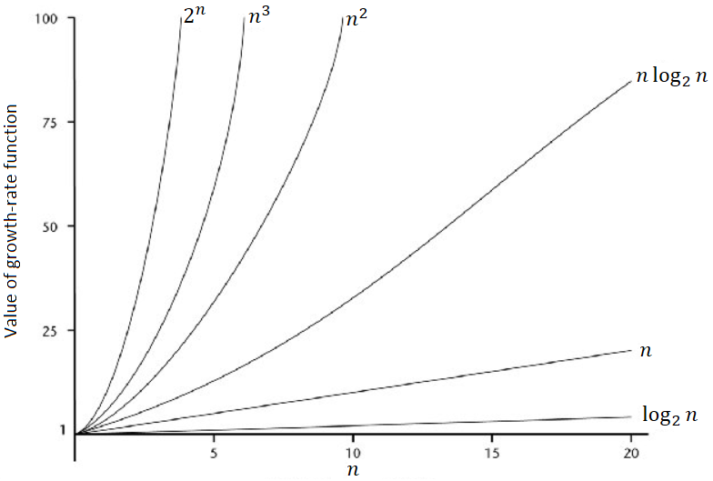 :::
If you notice, as the input size increases, certain class of functions grows much more rapidly than others.
::: center 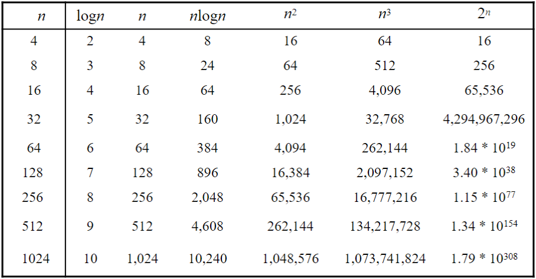 :::
If we let the value of the growth-rate function represent the units of time, an algorithm with the function \(f(n) = \log_2{n}\) would be much more efficient than an algorithm with the function \(f(n) = 2^n\).
In general, the order-of-growth can be classified to be: \(\(1 < \log{n} < \sqrt{n} < n < n\log{n} < n^2 < n^3 < \cdots < 2^n < 3^n < \cdots < n! < n^n\)\)
Analyzing and Designing Algorithms¶
In this lecture, we will go over three different types of sorting algorithm: insertion sort, merge sort, and selection sort.
The purpose of sorting algorithms is to solve the following problem:
- Input:
-
A sequence of \(n\) numbers \(\langle a_1, a_2, \dots, a_n \rangle\)
- Output:
-
A permutation (reordering) \(\langle a'_1, a'_2, \dots, a'_n \rangle\) of the input sequence such that \(a'_1 \leq a'_2 \leq \dots \leq a'_n\).
::: dBox ::: definitionT Definition 2.1 (Key). The sequence are typically stored in array. We also refer to the number as keys. ::: :::
Insertion Sort¶
Insertion sort is a sorting algorithm that places an unsorted element at its suitable place in each iteration.
::: algorithm [Insertion-Sort\((A,n) \to A[1 \dots\ n]\)]{.smallcaps}
::: algorithmic \(key = A[j]\) \(i = j - 1\) \(A[i+1] = A[i]\) \(i = i - 1\) \(A[i+1] = key\) ::: :::
-
Iterate from [
A[1]]{style="background-color: light-gray"} to [A[n]]{style="background-color: light-gray"} over the array. -
Compare the current element [
key = A[j]]{style="background-color: light-gray"} to its predecessor. -
If the element is smaller than its predecessor, compare it to the elements before. Move the greater elements one position up to make space for the swapped element.
::: list
Note that iterations starts at
[A[1]]{style="background-color: light-gray"}, not
[A[0]]{style="background-color: light-gray"}. For the sake of
convenience, we assume a fictitious record
[A[0]]{style="background-color: light-gray"} as the sentinel value
with key of \(-\infty\).
:::
It maybe easier to visualize this using images to better understand the psuedocode written. Suppose we start out with the following array with 6 elements.
::: center 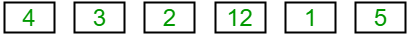 :::
If we apply the insertion sort algorithm, the following array would be sorted as shown below. Let's denote the [key]{style="background-color: light-gray"} in green.
::: center 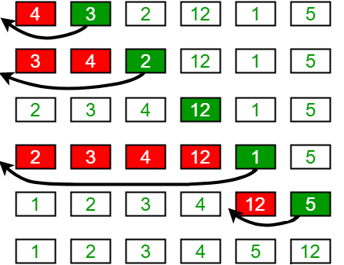 :::
Since we care most about the asymptotic performance, we are interested on finding the running time \(T(n)\).
::: algorithm ::: algorithmic \(key = A[j]\)
\(i = j - 1\)
\(A[i+1] = A[i]\)
\(i = i - 1\)
\(A[i+1] = key\) ::: :::
The lectures note and textbook goes in-depth deriving the following running time of insertion sort: \(\(T(n) = c_1n + c_2(n - 1) + c_4(n - 1) + c_5\sum_{j = 2}^n t_j + c_6\sum_{j = 2}^n (t_j - 1) + c_7\sum_{j = 2}^n (t_j - 1) + c_8(n - 1)\)\) where \(t_j\) is the number of times the while loop is executed for that value of \(j\).
The main takeaway is knowing how it sorts and the function for best and worst-case running time of the following algorithm is. In the next lecture, we will go more in-depth on analyzing the time complexity using asymptotic notations, which simplifies all of this stuff.
Best-Case Complexity¶
The best-case scenario is when the array is already sorted.
::: center 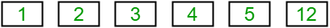 :::
In this example, the while loop does the comparison but never enters the
loop, since it always find that
[A[i]]{style="background-color: light-gray"} is always less than or
equal to [key]{style="background-color: light-gray"}.
::: center
 :::
:::
Thus, \(t_j = 1\), we can derive the number of comparisons for every outer loop iteration: \(\(\sum_{j=2}^n t_j \to \sum_{j=2}^n 1 = (n - 2) + 1 = n - 1\)\) Substituting this in the equation to the running time simplifies \(T(n)\) to \(\({ \begin{split} T(n) &= c_1n + c_2(n - 1) + c_4(n - 1) + c_5(n - 1) + c_8(n - 1) \\ &= (c_1 + c_2 + c_4 + c_5 + c_8)n - (c_2 + c_4 + 5 + c_8) \end{split}}\)\) or equivalently, if we let \(c_n\) simplify to some constants \(a\) and \(b\) then \(\(T(n) = an - b\)\)
Worst-Case Complexity¶
The worst-case scenario is when the array is sorted in reversefrom largest to smallest.
::: center 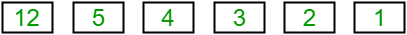 :::
In this example, \(t_j\) has to compare with all elements to the left \(j\)-th positioncompare with \(j - 1\) elements.
Thus, \(t_j = j\), we can derive the number of comparisons for every outer loop iteration \(\(\sum_{j = 2}^{n} t_j \to \sum_{j = 2}^{n} j = 2 + 3 + 4 + \dots + n = \bigg[\sum_{j=1}^n j\bigg] - 1 = \frac{n(n+1)}{2} - 1\)\) and as well the number of moves inside the while loop: \(\(\sum_{j = 2}^{n} (t_j - 1) \to \sum_{j = 2}^{n} (j - 1) = 1 + 2 + 3 + \dots + n - 1 = \frac{n(n-1)}{2}\)\) Substituting this in the equation to the running time simplifies \(T(n)\) to \(\({ \begin{split} T(n) &= c_1n + c_2(n - 1) + c_4(n - 1) + c_5\bigg[\frac{n(n+1)}{2} - 1\bigg] + (c_6 + c_7)\bigg[\frac{n(n-1)}{2}\bigg] + c_8(n - 1) \\ &= \bigg[\frac{c_5}{2} + \frac{c_6}{2} + \frac{c_7}{2}\bigg]n^2 + (c_1 + \dots + c_8)n - (c_2 + \dots + c_8) \end{split}}\)\) or equivalently, if we let \(c_n\) simplify to some constants \(a\), \(b\) and \(c\) then \(\(T(n) = an^2 + bn - c\)\)
Merge Sort¶
Merge sort closely follows the divide-and-conquer paradigm. Intuitively, it operates as follows.
- Divide:
-
Divide the \(n\)-element sequence to be sorted into two subsequences of \(n = 2\) elements each.
- Conquer:
-
Sort the two subsequences recursively using merge sort.
- Combine:
-
Merge the two sorted subsequences to produce the sorted answer.
::: algorithm [Merge-Sort]{.smallcaps} \((A,p,r) \to A[p \dots r]\)
::: algorithmic \(q = \lfloor (p + r)/2 \rfloor\)
[Merge-Sort(\(A,p,q\))]{.smallcaps}
[Merge-Sort(\(A,q + 1,r\))]{.smallcaps}
[Merge(\(A,p,q,r\))]{.smallcaps} ::: :::
-
Split the deck into two piles, until these become simple enoughan array of size \(1\).
-
Sort the left pile and sort the right pile using [
Merge-Sort()]{style="background-color: light-gray"}. -
Merge both piles into the final pile.
::: list
In the [Merge-Sort(A,p,r)]{style="background-color: light-gray"}, the
floor function is used to determine
[q]{style="background-color: light-gray"}, so in the case there's a
decimalit will result in an integer, ex.
\(\lfloor 7.5\rfloor = 7\).
:::
It may also be helpful to use a diagram like before to fully understand what's happening. The number in red denotes the order in which steps are processed.
::: center 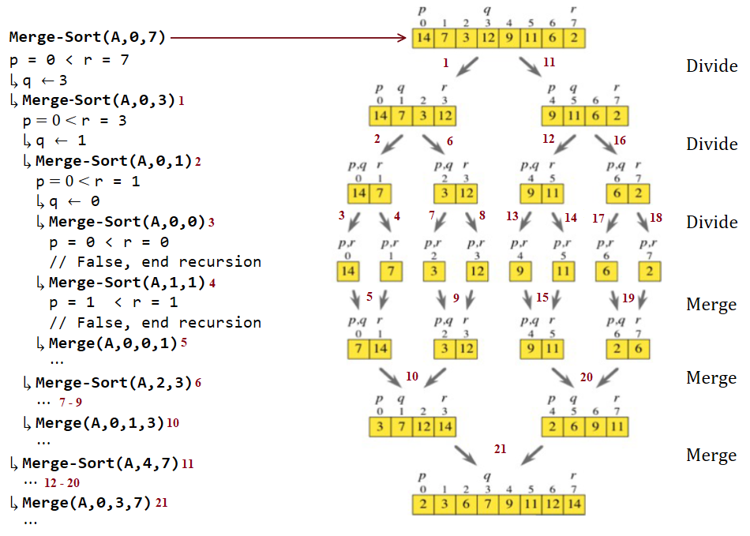 :::
If you prefer are more concrete example, look at the code I wrote on the left-side, which demonstrate how recursion works in this sorting algorithm. Each indent indicates the recursion depth.
- Step 1 to 3:
-
Calls [
Merge-Sort(A,p,q)]{style="background-color: light-gray"} to split the left children with different values of \(q\) and \(r\) (passing parameter by value). - Step 4:
-
Since left child can no longer split, call [
Merge-Sort(A,q+1,r)]{style="background-color: light-gray"} to work on right child. - Step 5:
-
If both left and right child are already split, merge them by [
Merge(A,p,q,r)]{style="background-color: light-gray"}. - Step 6:
-
Trace back to tree structure and find the node that does not complete the splitting, call [
Merge-Sort(A,q+1,r)]{style="background-color: light-gray"} to work on the right children. - Step 7 to 8:
-
The same process is done as for Step 3 and 4.
- Step 9:
-
Like in Step 5, merge them by [
Merge(A,p,q,r)]{style="background-color: light-gray"}.
Most of the steps are just repeated for the other half of the array, until all children have complete the splitting, then they are merged together.
Merge Algorithm¶
The key operation of the merge sort algorithm is the merging of two sorted sequences, after divide and conquer.
::: algorithm [Merge]{.smallcaps} \((A,p,q,r) \to A[p \dots q]\) and \(A[q + 1 \dots r]\) where \(p \leq q \leq r\)
::: algorithmic \(n_1 = q - p + 1\)
\(n_2 = r - q\)
Let L[1 ...\(n_1 + 1\)] and L[1 ...\(n_2 + 1\)] be new arrays
\(L[i] = A[p + i - 1]\)
\(R[j] = A[q + j]\) \(L[n_1 + 1] = \infty\)
\(R[n_2 + 1] = \infty\) \(i = 1\) \(j = 1\)
\(A[k] = L[i]\) \(i = i + 1\) \(j = j + 1\) ::: :::
It may look like a lot, but it's pretty simple. Most of the code are
explained in the comments listed in the right. The main focus here is
the [for]{style="background-color: light-gray"} loop in Line 12 to 17.
::: center 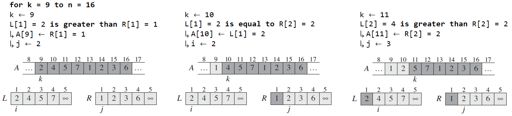 :::
The heavily shaded elements in
[A]{style="background-color: light-gray"} contain values that will be
copied over, and heavily shaded elements in
[L[]]{style="background-color: light-gray"} and
[R[]]{style="background-color: light-gray"} contain values that have
already been copied back into
[A[]]{style="background-color: light-gray"}. The lightly shaded
elements in [A[]]{style="background-color: light-gray"} indicate their
final value.
Time Complexity¶
Let's discuss the time complexity of the following algorithm, which we can break down to the divide-and-conquer paradigm.
-
The time to split deck takes can be denoted by \(c_1\), as it takes constant timedoes not depend on any input.
-
The time to sort left pile and sort right pile can be denoted by \(2T(n/2)\), due to recursion, where the size is now divided by two, \(n/2\).
-
The time to merge piles can be denoted by \(c_2n + c_3\), as it takes linear timeonly the [
for]{style="background-color: light-gray"} loop depends on input size, while the rest take constant time, thus simplified to that.
The time complexity results to \(\(T(n) = c_1 + T(n/2) + T(n/2) + c_2n + c_3\)\) Our goal is to determine the most rapidly growing term in \(T(n)\) and so we can set a few rules. We set constants \(c_n\) to either:
-
\(0\), if they will not be significant in the most rapidly growing term or ...
-
\(1\), if they will be
For \(T(n)\), when \(n > 1\), we can set \(c_1\) and \(c_3\) to \(0\) and \(c_2\) to \(1\), which simplifies to: \(\(T(n) = \begin{cases}c_1 & \text{if}\ n = 1 \\ 2T(n/2) + n & \text{if}\ n > 1 \end{cases}\)\)
::: list
Note that when \(n = 1\), the code inside
[if ... else]{style="background-color: light-gray"} wont run, as
there's only one element \(p \nless r\) or
\(1 \nless 1\), so we write it as a constant.
:::
In order to solve the recurrence, when \(n > 1\), we need a base case, so for simplicity, \(T(1) = 0\) and we can make a deduction from it.
::: tabu c | c c | c \(n\) & \(T(n/2)\) & \(2T(n/2) + n\) & \(n\log_2{n}\)\ \(2\) & \(0\) & \(2(0) + 2 = 2\) & \(2\)\ \(4\) & \(2\) & \(2(2) + 4 = 8\) & \(8\)\ \(8\) & \(8\) & \(2(8) + 8 = 24\) & \(24\)\ \(16\) & \(24\) & \(2(24) + 16 = 64\) & \(64\)\ \(32\) & \(64\) & \(2(64) + 32 = 160\) & \(160\)\ :::
Examining the numbers allows us to form an educated guess it is growing by a function of \(n\log_2{n}\), which can also be deducted by drawing a recursion tree.
- We start by representing \(T(n) = 2T(n/2) + n\) as a graph where we put the non-recursive part (\(n\) in this case) on the top row and put each recursive part on a row below.
::: center
 :::
:::
- Then expand downwards for the next level.
::: center 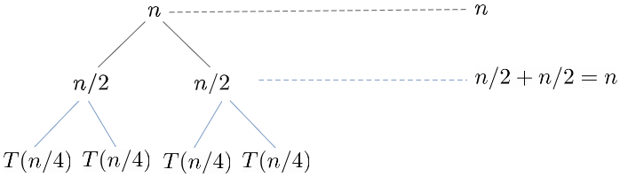 :::
- Repeat the same process. Eventually, it will reach a certain height which it reaches the base case and stop.
::: center 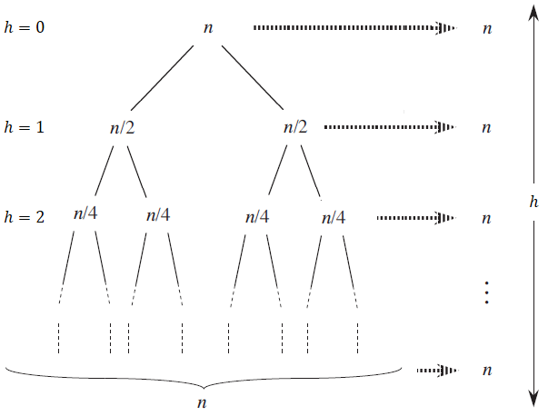 :::
::: {#height_avl} If you notice the sum of the non-recursive elements for each level is \(n\). Let's denote the depth or height of the tree as \(h\) and so we can say the time complexity is :::
\(\(T(n) = n \times h\)\) It will eventually reach the base case which we set to some constant when \(n=1\), where \(T(1) = 1\). We can rewrite the fraction in terms of the depth, \(h\), where \(\(\frac{n}{2^h} = 1 \to n = 2^h \to h = \log_2{n}\)\) Thus, the time complexity is \(\(T(n) = n\log_2{n}\)\) If you recall the order-of-growth from Lecture 2, we know that \(n\log{n} < n^2\), and so merge sorting beats insertion sort in the worst-case scenario, as it grows much more slowly.
Selection Sort¶
The final sorting algorithm will cover is selection sort.
::: algorithm [Selection-Sort\((A,n) \to A[1 \dots\ n]\)]{.smallcaps}
::: algorithmic \(min = i\) \(min = j\) Interchange \(A[i]\) with \(A[min]\) ::: :::
-
Select the first element as [
min]{style="background-color: light-gray"} -
Compare [
min]{style="background-color: light-gray"} with the second element. If the second element is smaller than minimum, assign the second element as [min]{style="background-color: light-gray"}. Repeat until last element. -
After each iteration, [
min]{style="background-color: light-gray"} is placed in the front of the unsorted list. -
For each iteration, indexing starts from the first unsorted element. The steps are repeated until sorted.
Let's use the example as we did for insertion sort, which is the following array with 6 elements.
::: center :::
The first iteration would like something like this. Let's denote the
[min]{style="background-color: light-gray"} in green and the line to
the element it's being compared to. The arrow indicates a swap to be
made.
::: center 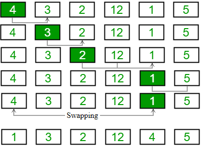 :::
In the next iteration, the first unsorted element is
[A[2]]{style="background-color: light-gray"}, so it starts at
\(3\).
::: center 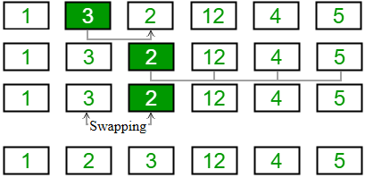 :::
Then it is repeated until all the elements are placed at their correct positions.
Time Complexity¶
As we have covered for the other algorithm, let's analyze the time complexity of selection sort.
::: algorithm ::: algorithmic \(min = i\)
\(min = j\)
Interchange \(A[i]\) with \(A[min]\) ::: :::
Combining each one of them, we get the following running time of selection sort: \(\(T(n) = c_1n + c_2(n-1) + c_3\sum_{j=2}^n j + c_4\sum_{j = 2}^n (j - 1) + c_5(n-1)\)\) As we have previously done with insertion sort, we can simplify the summation using the arithmetic series \(\({ \begin{split} T(n) &= c_1n + c_2(n-1) + c_3\bigg[\frac{n(n+1)}{2} - 1\bigg] + c_4\bigg[\frac{n(n-1)}{2}\bigg] + c_5(n-1) \\ &= \bigg[\frac{c_3}{2}+\frac{c_4}{2}\bigg]n^2 + (c_1 + \dots + c_5)n - (c_2 + \dots + c_5) \end{split}}\)\) or equivalently, if we let \(c_n\) simplify to some constants \(a\), \(b\) and \(c\) then \(\(T(n) = an^2 + bn - c\)\) Comparing it to the other two algorithms discussed, selection sort is on par with insertion sort in the worst-case scenario and so merge sorting is better than selection sort as well.
Complexity Analysis¶
Asymptotic Notations¶
As covered briefly in the growth rate of running time, it's hard to determine which algorithm is better with no prior knowledge of the input size, so we consider the asymptotic behavior of the two functions for very large input size \(n\).
We use specific notations called asymptotic notations to express mathematical properties of asymptotic efficiency.
::: dBox ::: definitionT Definition 3.1 (Asymptotic efficiency). The study of how the running time of an algorithm increases as the size of the input increases without bound. ::: :::
There are three asymptotic notations, which will go over in this lecture:
-
Big-Oh notation, \(\text{O}()\), for the upper bound or worst-case complexity
-
Big-Omega notation, \(\Omega()\), for the lower bound or best-case complexity
-
Theta notation, \(\Theta()\), for the average bound or average-case complexity
We can apply these to the previous lecture, which we covered three different sorting algorithms with varying time complexity:
Algorithm Time Complexity
Best Worst
Insertion Sort \(\Omega(n)\) \(\text{O}(n^2)\) Merge Sort \(\Omega(n\log{n})\) \(\text{O}(n\log{n})\) Selection Sort \(\Omega(n^2)\) \(\text{O}(n^2)\)
-3ex -0.1ex -.4ex 0.5ex .2ex Big-Oh Notation (O-notation) The notation represents the upper bound of the running time of an algorithm. Thus, it gives the worst-case complexity of an algorithm. \(\({ \begin{aligned} \text{O}(g(n)) = \{f(n) \mid & \text{ there exists positive constant } c \text{ and } n_0 \text{ such that } 0 \leq f(n) \leq cg(n) \\ & \text{ for all } n \geq n_0 \end{aligned}}\)\)
::: center 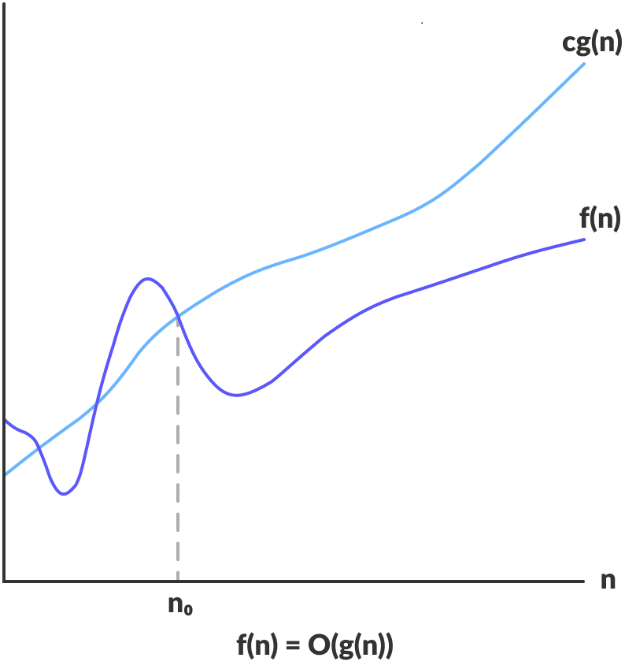 :::
Some tips for determining \(\text{O}()\) complexity:
-
Ignore the constants: \(\(5n \to n\)\)
-
Certain terms dominate other, which we ignore lower order terms: \(\(\text{O}(1) < \text{O}(\log{n}) < \text{O}(n) < \text{O}(n\log{n}) < \text{O}(n^2) < \cdots < \text{O}(2^n) < \cdots < \text{O}(n!) < \text{O}(n^n)\)\)
It might be easier to understand if we have examples to determine the big-Oh notation.
::: exampleT Example 3.1. Determine the upper bound \(\text{O}()\) for \(f(n)\):
-
\(f_A(n) = an^2 + bn + c\) is \(\text{O}(n^2)\)
-
\(f_B(n) = 2n + 3\) is \(\text{O}(n)\)
-
\(f_C(n) = 5 + (15 \cdot 20)\) is \(\text{O}(1)\)
-
\(f_D(n) = n^2\log{n} + n\) is \(\text{O}(n^2\log{n})\) :::
::: list
When writing the big-Oh notation, try to write the closest function to the running time. While the function \(\text{O}(n^2)\) is true for \(f_B(n)\), the function \(\text{O}(n)\) is the closest to \(f_B(n)\). :::
The rules for determining the \(\text{O}()\) complexity are as listed:
-
If \(g(n) = \text{O}(G(n))\) and \(f(n) = \text{O}(F(n))\), then: \(\(f(n) + g(n) = \text{O}(F(n)) + \text{O}(G(n)) = \text{O}(\text{max}[F(n), G(n)])\)\) \(\(f(n) \cdot g(n) = \text{O}(F(n)) \cdot \text{O}(G(n)) = \text{O}(F(n) \cdot G(n))\)\)
-
If \(g(n) = \text{O}(kG(n))\), where \(k\) is a constant, then \(g(n) = \text{O}(G(n))\).
-
If \(f(n)\) is a polynomial of degree \(d\ (P(n) = \sum_{i=0}^d a_in^i\) where \(a_d \neq 0)\), then \(f(n)\) is \(\text{O}(n^d)\).
-3ex -0.1ex -.4ex 0.5ex .2ex Big-Omega Notation (\(\Omega\)-notation) The notation represents the lower bound of the running time of an algorithm. Thus, it provides the best-case complexity of an algorithm. \(\({ \begin{aligned} \Omega(g(n)) = \{f(n) \mid & \text{ there exists positive constant } c \text{ and } n_0 \text{ such that } 0 \leq cg(n) \leq f(n) \\ & \text{ for all } n \geq n_0 \end{aligned}}\)\)
::: center 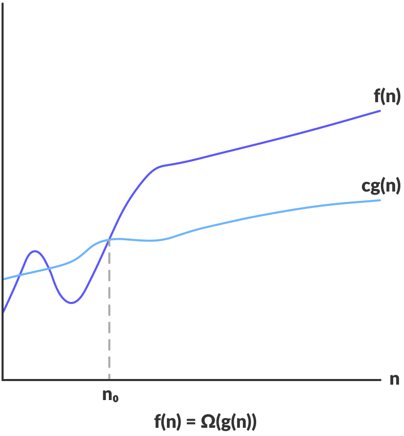 :::
The rules for determining \(\text{O}()\) complexity is also true for determining the \(\Omega()\) complexity. Let's use an example from before.
::: exampleT Example 3.2. Determine the lower bound \(\Omega()\) for \(f(n) = 2n + 3\):
-
If we look at the order-of-growth for functions, \(T(n)\) belongs to the linear function, \(n\) and if we define our lower and upper bounds as such (\({\overunderbraces{&\br{2}{\text{Lower bound}}}% {&1 < \log{n} < \sqrt{n} <& n &< n\log{n} < n^2 < n^3 < \cdots < 2^n < 3^n < \cdots < n! < n^n&} {& &\br{2}{\text{Upper bound}}}}\)\)
-
So the lower bound can be defined by any of the following: (\(\Omega(1) < \Omega(\log{n}) < \Omega(n)\)\)
-
Similar to the upper bound, we want the function closest to \(f(n)\) and so \(f(n) = 2n + 3\) is \(\Omega(n)\). :::
-3ex -0.1ex -.4ex 0.5ex .2ex Theta Notation (\(\Theta\)-notation) The next notation encloses the function from above and below. Since it represents the upper and the lower bound of the running time of an algorithm, it is used for analyzing the average-case complexity of an algorithm. \(\({ \begin{aligned} \text{O}(g(n)) = \{f(n) \mid & \text{ there exists positive constant } c_1,\ c_2, \text{ and } n_0 \text{ such that } \\ &\ 0 \leq c_1g(n) \leq f(n) \leq c_2g(n) \text{ for all } n \geq n_0 \end{aligned}}\)\)
::: center 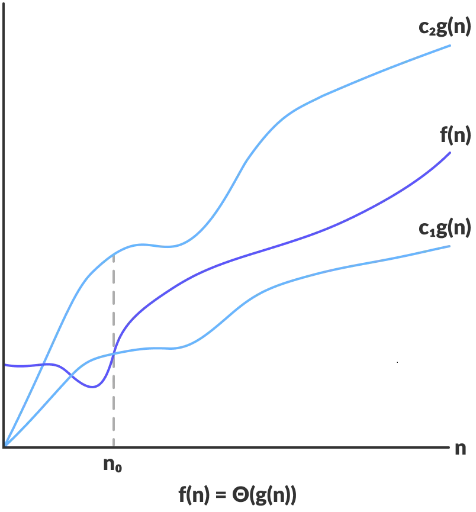 :::
Equivalently, \(f(n)\) is \(\Theta(g(n))\) if and only if \(f(n)\) is both \(\text{O}(g(n))\) and \(\Omega(g(n))\).
One notable example which we used previously is the function \(f(n) = 2n + 3\), which as we demonstrated in previous notations are \(\text{O}(n)\) and \(\Omega(n)\), thus \(f(n)\) is \(\Theta(n)\).
Complexity of Code Structures¶
Loops are considered as dynamic if they depend on input size, otherwise they are static statements, everything within a loop is considered as static statementtakes a constant amount of time, \(\text{O}(1)\). The complexity is determined by:
- number of iterations in the loops \(\times\) number of static statement
-3ex -0.1ex -.4ex 0.5ex .2ex For Loop The following example is a simple for loop:
for (int i = 0; i < n; i++) {
// statement
}
The for loop is a dynamic statement, as it depends on the size of
\(n\). We are interested in the amount of times
[statement]{style="background-color: light-gray"} runs, which
determines the time complexity of the following loop. Suppose
\(n = 3\) then let's determine how many iterations:
::: tabu c c c Iteration & \(i\) &\ & i = 0 &\ 2 & i = 1 &\ 3 & i = 2 &\ 4 & i = 3 &\ :::
You can see that the loop executes \(3\) times or in general, we can say \(n\) times. Thus, the time complexity is: \(\(n \cdot 1 = \text{O}(n)\)\)
Note that there might be few variations of the for loop. Suppose there are also consecutive statements:
for (int i = 0; i < n; i++) {
// statement
}
for (int i = 1; i <= n; i++) {
// statement
}
In both examples, the loop executes for \(n\) times. When we have consecutive statements, we would just add them together. If you recall, we ignore any constants of lower order terms. Thus, the time complexity is: \(\(\underbrace{n \cdot 1}_{\substack{\text{The first} \\ \text{for loop}}} + \underbrace{n \cdot 1}_{\substack{\text{The second} \\ \text{for loop}}} = 2n = \text{O}(n)\)\)
Note that this is not always the case for every for loop, as it depends on the initialization, condition test, and update statement. Suppose we have the following for loop to analyze:
for (int i = 1; i <= n; i = i * 2) {
// statement
}
Let's list out each iterations of the loop, till \(k\) iterations, since we do not know how many times this loop will execute.
::: tabu c c c Iteration & \(i\)\ & i = 1 & \(2^0\)\ 2 & i = 2 & \(2^1\)\ 3 & i = 4 & \(2^2\)\ ⋮& ⋮\ \(k\) & i = \(2^{k - 1}\) &\ :::
From the condition, we know that the loop will terminate once
[i > n]{style="background-color: light-gray"}. So we assume
\(i = n\), when it has reach \(k\) iterations; our
very last iteration. Then we will solve for \(k\):
\(\({
\begin{split}
2^{k - 1} &= n \\
k - 1 &= \log_2{n} \\
k &= \log_2{n} + 1
\end{split}}\)\)
If you recall from earlier, we ignore lower order terms. Thus, the time complexity is: \(\((\log_2{n} + 1) \cdot 1 = \text{O}(\log_2{n})\)\)
-3ex -0.1ex -.4ex 0.5ex .2ex Nested Loop The following example is a nested for loop:
for (int i = 0; i < n; i++) {
for (int j = 0; j < n, j++) {
// statement
}
}
As we covered earlier, the following for loop executes \(n\) times. Suppose now we have an inner loop, which also executes \(n\) times, then the statement is run \(n \times n\) times. Thus, the time complexity is: \(\((n \cdot n) \cdot 1 = \text{O}(n^2)\)\)
The general formula for a nested loop is the time complexity of the outer loop times the inner loops. This also applies if we have a outer while loop with an inner for loop.
-3ex -0.1ex -.4ex 0.5ex .2ex If Else Statement The following example is an if else statement:
if (n == 0) {
// statement 1
} else {
for (int i = 0; i < n; i++) {
// statement 2
}
}
If you notice, there's two possibilities that could occur: the if part,
where[statement 1]{style="background-color: light-gray"} will run
once, \(\text{O}(1)\) or the else part, where
[statement 2]{style="background-color: light-gray"} will run for
\(n\) times, \(\text{O}(n)\).
In general, the time complexity of an if else statement is: \(\(\text{O}(if-else) = \text{O}\Big(\text{max}\Big[\text{O}(\text{condition1}), \text{O}(\text{condition2}), \dots, \text{O}(\text{branch}1), \text{O}(\text{branch2}), \dots\Big]\Big)\)\) As we are typically interested in the worst-cases, we only consider the branch with the largest running time. The condition runs once and then we add whichever is larger, which is the else part, thus, the time complexity is: \(\(1 + n = \text{O}(n)\)\) or equivalently \(\(\text{O}\Big(\text{max}\Big[\text{O}(1), \text{O}(1), \text{O}(n)\Big]\Big) = \text{O}(n)\)\)
-3ex -0.1ex -.4ex 0.5ex .2ex Switch Statement The following example is a switch statement:
switch (key) {
case 'a':
for (int i = 0; i < n; i++) {
// statement 1
}
case 'b':
for (int i = 0; i < n; i++) {
for (int j = 0; j < n, j++) {
// statement 2
}
}
default:
// statement 3
break;
}
Similar to the if else statement, we only consider the case with the
largest running time, including the default case. In this example, for
[case ’b’]{style="background-color: light-gray"},
[statement 2]{style="background-color: light-gray"} will run for \(n^2\)
times, \(\text{O}(n^2)\). Thus, the time complexity is:
\(\(1 + n^2 = \text{O}(n^2)\)\) or equivalently
\(\(\text{O}\Big(\text{max}\Big[\text{O}(1), \text{O}(n), \text{O}(n^2), \text{O}(1)\Big]\Big) = \text{O}(n^2)\)\)
Recurrence Equations¶
-4ex -1ex -.4ex 1ex .2ex Introduction In Lecture 2, we described the worst-case running time \(T(n)\) of merge-sort procedure by the recurrence: \(\(T(n) = \begin{cases} 1 & \text{if}\ n = 1 \\ 2T(n/2) + n & \text{if}\ n > 1 \end{cases}\)\) whose solution we claimed to be \(T(n) = \Theta(n\log n)\). Previously, we didn't really have a general method for finding the form of recurrences. Our goal for this lecture is to go in-depth in ways we can analyze recursive algorithms and form a general formula.
::: dBox ::: definitionT Definition 4.1 (Recursive algorithm). An algorithm which calls itself to solve smaller problems. ::: :::
Recurrence can be polymorphic, meaning it can take many forms:
-
A recursive algorithm which divides to two problem with equal sizes. \(\(T(n) = 2T(n/2) + \Theta(n)\)\)
-
A recursive algorithm might divide subproblems into unequal sizes. \(\(T(n) = T(2n/3) + T(n/3) + \Theta(n)\)\)
-
They are not necessarily constrained to being a constant fraction of the original problem size. \(\(T(n) = T(n-1) + \Theta(1)\)\)
-4ex -1ex -.4ex 1ex .2ex Finding the Asymptotic Bounds There are three methods for solving recurrencesthat is, for obtaining asymptotic "\(\Theta\)" or "\(\text{O}\)" bounds on the solution:
-
Substitution Method
-
Recursion-Tree Method
-
Master Method
-3ex -0.1ex -.4ex 0.5ex .2ex Substitution Method This method is powerful, but we must be able to guess the form of the answer in order to apply it. It comprises of the following steps:
- Step 1:
-
Try a few substitutions to find a pattern.
- Step 2:
-
Guess the recurrence formula after \(k\) iterations (in terms of \(k\) and \(n\)).
- Step 3:
-
Set \(k\) so we get the base case.
- Step 4:
-
Put \(k\) back into the formula to find a potential closed form.
- Step 5:
-
Prove the potential closed form using induction.
Using the merge-sort algorithm as an example, which has the following recurrence: \(\(T(n) = \begin{cases} 1 & \text{if}\ n = 1 \\ 2T(n/2) + n & \text{if}\ n > 1 \end{cases}\)\) Let's go step-by-step, as described.
-
The easiest way to find a pattern, is by simply writing out the first few iterations. Let's denote \(k\) as our number of iterations starting from \(1\). \(\({\begin{split} k &= 1 & T(n) &= 2T(n/2) + n \\ k &= 2 & T(n) &= 2\Big[2T(n/4) + n/2\Big] + n = 4 \cdot T(n/4) + 2n \\ k &= 3 & T(n) &= 2\bigg[2\Big[2T(n/8) + n/4\Big] + n/2\bigg] + n = 8 \cdot T(n/8) + 3n \\ \end{split}}\)\)
-
Our goal is to generalize this for \(k\) iterations. In other words, relating each of the constants to \(k\). We can rewrite it as such \(\({\begin{split} k &= 1 & T(n) &= 2^1 \cdot T(n/2^1) + 1n \\ k &= 2 & T(n) &= 2^2 \cdot T(n/2^2) + 2n \\ k &= 3 & T(n) &= 2^3 \cdot T(n/2^3) + 3n \\ \end{split}}\)\) Thus, we can form a general formula, using in terms of \(k\) and \(n\) \(\(T(n) = 2^k \cdot T(n/2^k) + kn\)\)
-
We know the base case is set to \(T(1) = 1\). From our general formula, we can determine how many iterations there are in terms of \(n\) to reach the base case, by solving for \(k\). \(\({\begin{split} \frac{n}{2^k} = 1 \ \to\ n &= 2^k \\ k &= \log_2{n} \end{split}}\)\)
-
Substituting \(k = \log_2{n}\) back into the general formula, we get a potential closed form, as \(T()\) is no longer inside our formula. \(\({\begin{split} T(n) &= 2^{\log_2{n}} \cdot T(n/2^{\log_2{n}}) + n\log_2{n} \\ &= n + n\log_2{n} \end{split}}\)\)
-
We can guess that the solution is \(T(n) = \text{O}(n\log{n})\). However, we need a definite proof that this is true, by using mathematical induction for the following statement. \(\(0 \leq T(n) \leq cn\log{n} \hspace{1cm} \exists c > 0,\ \forall n \geq n_0\)\)
-2ex -0.1ex -.2ex .2ex .2ex Mathematical Induction In order to prove something is true, we use mathematical induction. We must show that we can choose the constant \(c\) large enough so that \(T(n) \leq cn\log{n}\) is true.
-
Remember, the base case is \(T(1) = 1\). Then for \(n = 1\), it yields \(T(1) \nleq c(1)\log{1} = 0\). Consequently, the base case fails to hold, so what now?
-
For asymptotic notation we can specify a specific bound, \(\forall n \geq n_0\), where \(n_0\) is something we can choose. Thus \(n_0 = 2\), removing it from consideration in the induction proof.
-
The induction proof consists of three parts: the base case, inductive hypothesis and inductive step.
Let's assume \(n\) is some power of \(2\) or \(n = 2^k\), for sake of convenience.
- Base Case:
-
Let \(k = 1\) or \(n = 2\) then: \(\(T(2) = 2T(1) + 2 = 2 + 2 = 4 \leq c(2)\log{2}\)\) We can see that the inequality holds true for the base case, such that there \(c \geq 2\).
- Inductive hypothesis:
-
We will now assume that our proposition, \(T(n) = \text{O}(n\log{n})\), holds true for \(k -1\), which equivalently is \(n/2\), therefore: \(\(T(n/2) \leq c(n/2)\log{(n/2)}\)\) To prove the inductive step, one assumes the induction hypothesis for \(k-1\) and then uses this assumption to prove that the statement holds for \(k\). If instead, we assume our hypothesis to hold for \(k\), then we must prove it holds for \(k+1\).
- Inductive step:
-
From our hypothesis, prove the guess of correct for \(k\). Using the following: \(\(T(n) = 2T(n/2) + n\)\) Since we know \(T(n/2) \leq c(n/2)\log{(n/2)}\), then we can rewrite it as such: \(\({\begin{split} T(n) &\leq 2\Big[c(n/2)\log{(n/2)}\Big] + n \\ &\leq cn\log{(n/2)} + n = cn\log{n} - cn\log{2} + n \\ &\leq cn\log{n} + (1 - c)n \\ &\leq cn\log{n}\qquad (\forall c \geq 1) \end{split}}\)\) From the inductive step, we proved that proposition is true as we found that there exists some value of \(c\).
-3ex -0.1ex -.4ex 0.5ex .2ex Recursion-Tree Method In a recursion tree, we sum the costs within each level of the tree to obtain a set of per-level costs, and then we sum all the per-level costs to determine the total cost of all levels of the recursion.
- Step 1:
-
Start by substituting the parent with non-recursive part of the formula and adding child nodes for each recursive part.
- Step 2:
-
Expand each node repeating the step above, until you reach the base case.
We already covered how to do this using merge-sort algorithm, so let's start off simple, by using the following recurrence: \(\(T(n) = \begin{cases} 1 & \text{if}\ n = 1 \\ T(n-1) + n & \text{if}\ n > 1 \end{cases}\)\) As usual, let's go step-by-step.
-
The non-recursive part, \(n\), will be the parent node and the recursive part, \(T(n-1)\), will be the child node. The costs within each level is displayed in the right-hand side.
::: center
 :::
::: -
Expand on \(T(n-1)\), similar to the previous step.
::: center 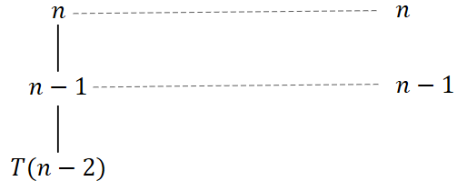 :::
Eventually, it will reach the base case of \(T(1) = 1\). The fully expanded tree has height \(n\).
::: center
 :::
:::Notice how the sum of all the per-level cost is equivalently the arithmetic series, thus: \(\(T(n) = 1 + \cdots + (n-2) + (n-1) + n = \frac{n(n+2)}{2} = \Theta(n^2)\)\)
Suppose you consider something a bit more complex, which divides the subproblems into unequal sizes, for the following recurrence: \(\(T(n) = T(n/4) + T(n/2) + n^2\)\)
-
The non-recursive part, \(n^2\), will be the parent node and the recursive part, \(T(n/4)\) and \(T(n/2)\), will be the child nodes.
::: center 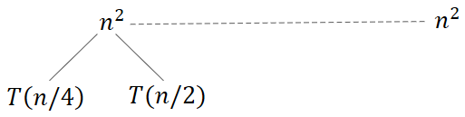 :::
-
Expand on \(T(n/4)\) and \(T(n/2)\), similar to the previous step.
::: center 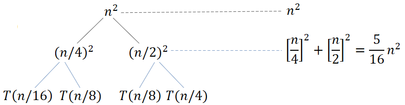 :::
Eventually, it will reach the base case of \(T(1)\).
::: center 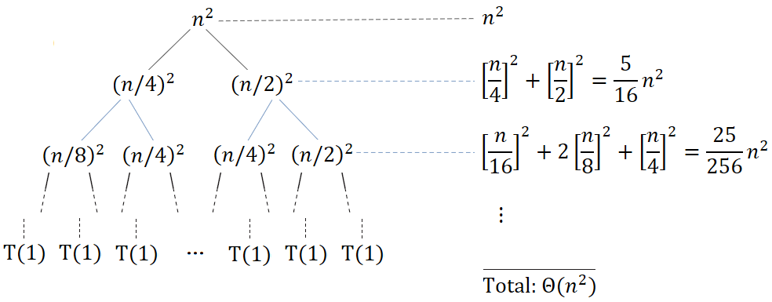 :::
Notice how the sum of all the per-level cost is equivalently the geometric series, thus: \(\(T(n) = n^2\bigg[1 + \Big[\frac{5}{16}\Big] + \Big[\frac{5}{16}\Big]^2 + \cdots\bigg] = \Theta(n^2)\)\)
-3ex -0.1ex -.4ex 0.5ex .2ex Master Method The master method provides a "cookbook" method for solving recurrences of the form: \(\(T(n) = aT(n/b) + f(n)\)\) where \(a \geq 1\), \(b > 1\) and \(f(n)\) be a function of \(\(f(n) = n^k\log^p{n}\)\) Note that there are various variations of the master theorem, but this is definition is what I found the easiest to understand. It consists of memorizing these three cases:
- Case One:
-
If \(\log_b{a} > k\), then \(T(n) = \Theta(n^{\log_b{a}})\).
- Case Two:
-
If \(\log_b{a} = k\) and ...
(a) \(p > -1\), then \(T(n) = \Theta(n^k\log^{p+1}{n})\).
(b) \(p = -1\), then \(T(n) = \Theta(n^k\log({\log{n}}))\).
(c) \(p < -1\), then \(T(n) = \Theta(n^k)\).
- Case Three:
-
If \(\log_ba < k\) and ...
(a) \(p \geq 0\), then \(T(n) = \Theta(n^k\log^{p}{n})\).
(b) \(p < 0\), then \(T(n) =\Theta(n^k)\).
It looks a bit complicated at first glance, but once we get to the examples, it becomes quite easy.
::: exampleT Example 4.1. Suppose we have the following recurrence: (\(T(n) = 2T(n/2) + 1\)\)
-
We know \(a = 2\) and \(b = 2\), but how do we get \(k\) and \(p\)? We can rewrite it in the form of \(n^k\log^p{n}\): (\(f(n) = 1 = n^0\log^0{n}\)\) You can confirm that both equations are identical, thus \(k = 0\) and \(p = 0\).
-
Since \(\log_2{2} > k\), then \(T(n) = \Theta(n^{\log_b{a}})\). Substituting in the values for \(a\) and \(b\), we get: (\(T(n) = \Theta(n^{\log_2{2}}) = \Theta(n)\)\) :::
You can refer to this [video]{.underline} for more examples covering the three cases.
Elementary Data Structures¶
-4ex -1ex -.4ex 1ex .2ex Stacks Stacks are dynamic sets in which the element removed from the set by the delete operation is prespecified. What defines a stack is that it implements a last-in, first-out (LIFO) principle, so only the top element is accessible.
::: center
 :::
:::
There are three main methods on a stack:
-
[
push(S,x)]{style="background-color: light-gray"} - Inserts an object \(\colorbox{light-gray}{\texttt{x}}\) onto top of Stack [S]{style="background-color: light-gray"}. -
[
pop(S)]{style="background-color: light-gray"} - Removes the top object of stack [S]{style="background-color: light-gray"}; if the stack is empty, an error occurs. -
[
top(S)]{style="background-color: light-gray"} - Returns the top object of the stack [S]{style="background-color: light-gray"}, without removing it; if the stack is empty, an error occurs.
::: center
 :::
:::
The following support methods should also be defined:
-
[
size()]{style="background-color: light-gray"} - Returns the number of objects in stack [S]{style="background-color: light-gray"}. -
[
isEmpty()]{style="background-color: light-gray"} - Indicates if stack [S]{style="background-color: light-gray"} is empty.
We can implement each of the stack operations with just a few lines of code:
::: algorithm [Stack-Empty]{.smallcaps} \((S)\)
::: algorithmic \(\textsc{True}\) \(\textsc{False}\) ::: :::
::: algorithm [Push]{.smallcaps} \((S,x)\)
::: algorithmic \(S\,.\,top = S\,.\,top + 1\) \(S[S\,.\,top ] = x\) ::: :::
::: algorithm [Pop]{.smallcaps} \((S)\)
::: algorithmic \"underflow\" \(S\,.\,top = S\,.\,top - 1\) \(S[S\,.\,top + 1]\) ::: :::
-3ex -0.1ex -.4ex 0.5ex .2ex Performance and Limitations Let's now look
at an array implementation of a stack
[S]{style="background-color: light-gray"} with \(7\)
elements. Let \(S\,.\,top\) be a pointer to keep track of the
last element (or top).
-
When \(S\,.\,top = 0\), there is no elements and is empty, so stack [
S]{style="background-color: light-gray"} has \(0\) elements.::: center 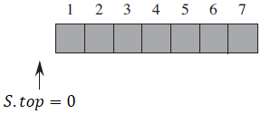 :::
-
When we call [
push(S,15)]{style="background-color: light-gray"}, \(S\,.\,top\) moves up by \(1\) and inserts element \(15\) to the stack.::: center 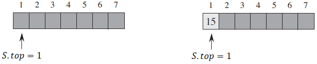 :::
-
Suppose we call the following: [
push(S,6)]{style="background-color: light-gray"}, [push(S,2)]{style="background-color: light-gray"} and [push(S,3)]{style="background-color: light-gray"}. The array is shown below.::: center
 :::
::: -
When we call [
pop(S)]{style="background-color: light-gray"}, \(S\,.\,top\) moves down by \(1\) and returns the element that was removed, which is element \(3\).::: center 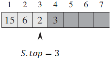 :::
-
Although element \(3\) still appears in the array, it is no longer in the stack. When we call [
push(S,9)]{style="background-color: light-gray"}, \(S\,.\,top\) moves up by \(1\) and overwrites element \(3\) with \(9\).::: center 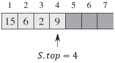 :::
If you notice, when pushing an element or popping an element off the stack, it takes a constant amount of time. Let \(n\) be the numbers of elements in the stack.
-
Each operation runs in time \(\text{O}(1)\).
-
The space used is \(\text{O}(n)\).
There are a few limitations we must consider:
-
The maximum size of the stack must be defined priority and cannot be changed.
-
When pushing a new element into a full stack, it causes an implementation error.
-4ex -1ex -.4ex 1ex .2ex Queue Queue are another type of dynamic sets, which implements first-in, first-out (FIFO) principle, so queue items are removed in exactly the same order as they were added to the queue.
::: center 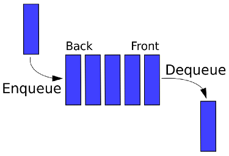 :::
There are exist the following operations on a queue:
-
[
enqueue(Q,x)]{style="background-color: light-gray"} - Inserts an element \(\colorbox{light-gray}{\texttt{x}}\) at the rear of the queue [Q]{style="background-color: light-gray"}. -
[
dequeue(Q)]{style="background-color: light-gray"} - Removes the element at the front of queue [Q]{style="background-color: light-gray"}. -
[
front()]{style="background-color: light-gray"} - Returns the front element of the queue without removing it. -
[
new()]{style="background-color: light-gray"} - Creates an empty queue. -
[
size()]{style="background-color: light-gray"} - Returns the number of objects in queue. -
[
isEmpty()]{style="background-color: light-gray"} - Indicates if queue is empty.
::: center
 :::
:::
Assume \(n = Q\,.\,length\). The pseudocode for enqueue and dequeue is shown below:
::: algorithm [Enqueue]{.smallcaps} \((Q,x)\)
::: algorithmic \(Q[Q\,.\,tail] = x\) \(Q\,.\,tail = 1\) ::: :::
::: algorithm [Dequeue]{.smallcaps} \((Q)\)
::: algorithmic \(x = Q[Q\,.\,head]\) \(Q\,.\,head = 1\) ::: :::
Note that we didn't account for the error when underflow and overflow occurs.
-3ex -0.1ex -.4ex 0.5ex .2ex Performance and Limitations Let's now look
at an array implementation of a queue
[Q]{style="background-color: light-gray"} with \(7\)
elements. Let \(Q\,.\,head\) be a pointer for the front of
the queue and \(Q\,.\,tail\) be the back of the queue.
-
When \(Q\,.\,head = Q\,.\,tail\), there is no elements, so queue [
Q]{style="background-color: light-gray"} has \(0\) elements.::: center
 :::
::: -
When we call [
enqueue(Q,15)]{style="background-color: light-gray"}, element \(15\) is added to the queue then \(Q\,.\,tail\) moves up by \(1\).::: center 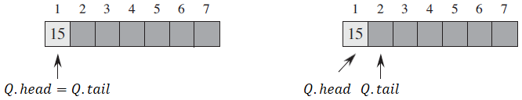 :::
-
Suppose we call the following: [
enqueue(Q,6)]{style="background-color: light-gray"}, [enqueue(Q,2)]{style="background-color: light-gray"} and [enqueue(Q,9)]{style="background-color: light-gray"}. The array is shown below.::: center 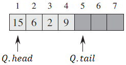 :::
-
When we call [
dequeue(Q)]{style="background-color: light-gray"}, element \(15\) located at the front of queue indicated by \(Q\,.\,head\), is removed then \(Q\,.\,head\) moves up by \(1\) to element \(6\).::: center 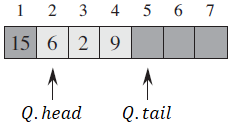 :::
-
As the final scenario, suppose we filled the array from \(Q[2 .. 7]\), as shown below.
::: center 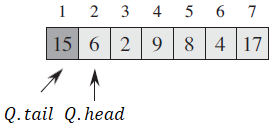 :::
When we call \(\colorbox{light-gray}{\texttt{enqueue(Q,x)}}\) or add one more element, \(Q\,.\,tail\) will have to move up by one where \(Q\,.\,head = Q\,.\,tail\).
::: center 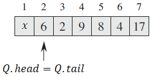 :::
But, if you recall, this means the queue is empty, which is not the case and so the queue overflows.
Similar to a stack, when enqueueing or dequeueing an element, it takes a constant amount of time. Let \(n\) be the numbers of elements in the queue.
- Each operation runs in time \(\text{O}(1)\).
There are also a few limitations we must consider which carries over for queue:
-
The maximum size of the stack must be defined priority and cannot be changed.
-
If we attempt to dequeue an element from an empty queue, the queue underflows.
-
If we attempt to enqueue an element from a full queue, the queue overflows and so we can only store \(n - 1\) elements.
-4ex -1ex -.4ex 1ex .2ex Linked Lists A collection of nodes that together form a linear ordering. Unlike an array, however, in which the linear order is determined by the array indices, the order in a linked list is determined by a pointer in each object. It consists of:
-
A sequence of nodes
-
Each node contains a value and link reference to some other node
-
The last node contains a null link
-3ex -0.1ex -.4ex 0.5ex .2ex Singly Linked Lists The most basic of all linked data structures, which are used to implement stacks and queues. Each node has data and a pointer to the next node.
::: center 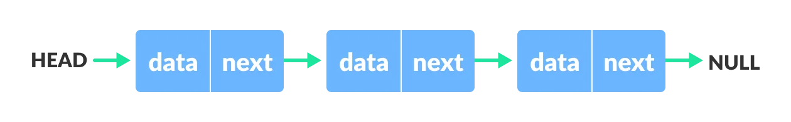 :::
- Searching a singly linked list.
::: algorithm [List-Search]{.smallcaps} \((L,k)\)
::: algorithmic \(x = L\,.\,head\) \(x = x\,.\,next\) \(x\) ::: :::
To search a list of \(n\) elements, the [List-Search]{.smallcaps} procedure takes \(\Theta(n)\) time in the worst-case, since it may have to search the entire listsimilar to insertion sort.
- Inserting into a singly linked list.
-
The [List-Insert]{.smallcaps} procedure splices the inserted element, [
x]{style="background-color: light-gray"}, onto the front of the linked list.
::: center 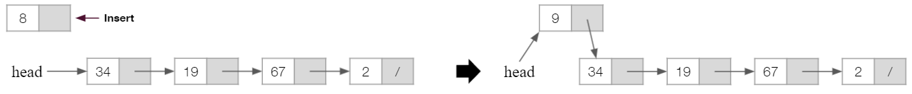 :::
The running time for [List-Insert]{.smallcaps} on a list of \(n\) elements is \(\text{O}(1)\).
- Deleting from a singly linked list.
-
The [List-Delete]{.smallcaps} procedure removes an element, [
x]{style="background-color: light-gray"}, from a linked list by getting a pointer to \(\colorbox{light-gray}{\texttt{x}}\) and it splices [x]{style="background-color: light-gray"} out of the list by updating pointers.
::: center
 :::
:::
The running time for [List-Delete]{.smallcaps} runs in \(\text{O}(1)\) time, but if we wish to delete an element with a given key, \(\text{O}(n)\) time is required in the worst case.
Some applications of singly linked lists are:
-
Implement stacks and queues, as shown below.
-
Dynamic memory allocation, which will cover in the very end.
-3ex -0.1ex -.4ex 0.5ex .2ex Doubly Linked Lists We add a pointer to the previous node. Thus, we can go in either direction: forward or backward.
::: center 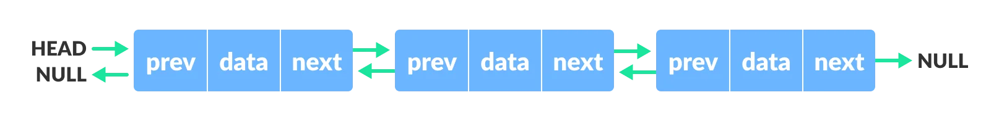 :::
- Searching a doubly linked list.
-
A singly and linked list uses the same algorithm for searching. Thus, both take \(\Theta(n)\) times in the worst-case to search through a list of \(n\) elements.
<!-- -->
- Inserting into a doubly linked list.
-
The [List-Insert]{.smallcaps} procedure is also similar to the singly, but now we also have to account for the previous pointer.
::: center 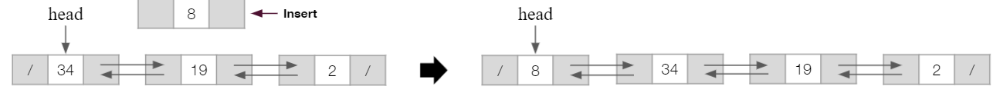 :::
::: algorithm [List-Insert]{.smallcaps} \((L,x)\)
::: algorithmic \(x\,.\,next = L\,.\,head\) \(L\,.\,head\,.\,prev = x\) \(L\,.\,head = x\) \(x\,.\,prev =\) [nil]{.smallcaps} ::: :::
The running time for [List-Insert]{.smallcaps} on a list of \(n\) elements is \(\text{O}(1)\).
- Deleting from a doubly linked list.
-
Likewise, same thing can be said for the [List-Delete]{.smallcaps} procedure, in which we now have to also assign the previous pointer
::: center 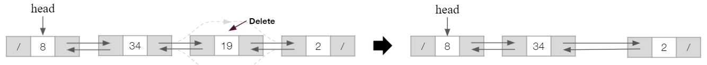 :::
::: algorithm [List-Delete]{.smallcaps} \((L,x)\)
::: algorithmic \(x\,.\,prev\,.\,next = x\,.\,next\) \(L\,.\,head = x\,.\,next\) \(x\,.\,next\,.\,prev = x\,.\,prev\) ::: :::
The running time for [List-Delete]{.smallcaps} runs in \(\text{O}(1)\) time, but if we wish to delete an element with a given key, \(\text{O}(n)\) time is required in the worst case.
Some applications of doubly linked lists are:
-
Browsers to implement backward and forward navigation of visited web pagesthe back and forward button.
-
Various application to implement Undo and Redo functionality.
-3ex -0.1ex -.4ex 0.5ex .2ex Circularly Linked Lists A circularly singly linked list is a variation of a linked list in which the last element is linked to the first element. This forms a circular loop.
::: center 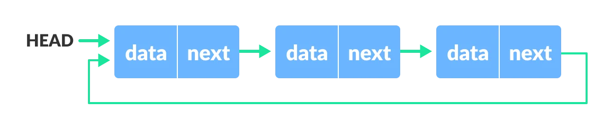 :::
A circularly doubly linked list, in which in addition to the one above, the first element is linked to the last element.
::: center 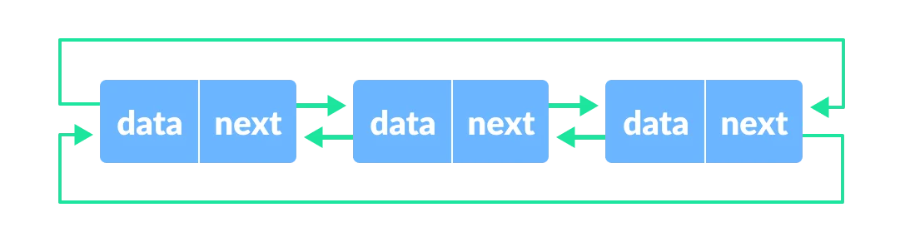 :::
In a circularly linked list, we used a sentinelrepresented by the dark
grey node [L.nil]{style="background-color: light-gray"}.
::: center 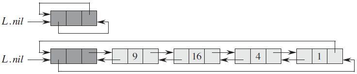 :::
It represents [nil]{.smallcaps} which lies between the head and tail. It functions like any other object in a doubly linked list, which it has a pointer from the previous and next node. Below are the procedures used for circularly doubly linked list with sentinel.
::: algorithm [List-Search/]{.smallcaps} \((L,k)\)
::: algorithmic \(x = L\,.\,nil\,.\,next\) \(x = x\,.\,next\) \(x\) ::: :::
::: algorithm [List-Insert']{.smallcaps} \((L,x)\)
::: algorithmic \(x\,.\,next = L\,.\,nil\,.\,next\) \(L\,.\,nil\,.\,next\,.\,prev = x\) \(L\,.\,nil\,.\,next = x\) \(x\,.\,prev = L\,.\,nil\) ::: :::
::: algorithm [List-Delete']{.smallcaps} \((L,x)\)
::: algorithmic \(x\,.\,prev\,.\,next = x\,.\,next\) \(x\,.\,next\,.\,prev = x\,.\,prev\) ::: :::
Some applications of circularly linked lists are:
-
Useful for implementation of queue.
-
Circular lists are useful in applications to repeatedly go around the list.
-
Circular doubly linked lists are used for implementation of advanced data structures like Fibonacci Heap.
-3ex -0.1ex -.4ex 0.5ex .2ex Implementing Pointers and Objects We can implement pointers and objects in languages that do not provide them by synthesizing them from arrays and array indices. For this example, let's use the following doubly linked list:
::: center 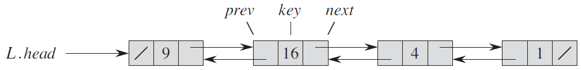 :::
- Single-array representation of objects.
-
Analogous to storing an object in the memory.
::: center 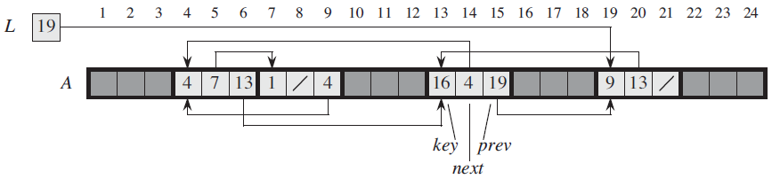 :::
Each object is represented by a contiguous sub-array of length \(3\). The three attributes [
key]{style="background-color: light-gray"}, [next]{style="background-color: light-gray"}, and [prev]{style="background-color: light-gray"} correspond to the offsets: \(0\), \(1\), and \(2\) of the sub-array.
- Multiple-array representation of objects.
-
We can represent a collection of objects that have the same attributes by using an array for each attribute.
::: center
 :::
:::
You can think of each column (or vertical slice) as a single object. The pointers resides in the [
next]{style="background-color: light-gray"} and [prev]{style="background-color: light-gray"} array, which point to the index where the next object resides.
- Allocating and freeing objects.
-
To insert a key into a dynamic set represented by a doubly linked list, we must allocate a pointer to a currently unused object in the linked-list representation.
::: center 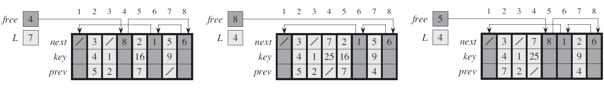 :::
We keep the free objects in a singly linked list (only [
next]{style="background-color: light-gray"} pointer), which we call the free list. The free list acts like a stackthe next object allocated is the last one freed.
-4ex -1ex -.4ex 1ex .2ex Heaps The (binary) heap data structure is an array of object that we can view as a nearly complete binary tree. Each node of the tree corresponds to an element of the array.
::: center 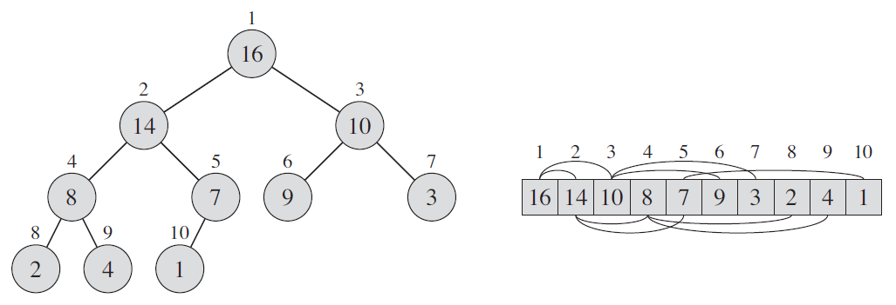 :::
There are two kinds of binary heap. In both kinds, the values in the nodes satisfy a heap property, the specifics of which depend on the kind of heap.
- Max-heap.
-
The max-heap property is that for every node \(i\) other than the root: \(\(A[\textsc{Parent}(i)] \geq A[i]\)\) which means that a child node can't have a greater value than its parent.
- Min-heap.
-
The min-heap property is the opposite, which for every node \(i\) other than the root: \(\(A[\textsc{Parent}(i)] \leq A[i]\)\) which means that a parent node can't have a greater value than its child nodes.
If all the nodes satisfy the heap property, then a binary tree is a heap. However, if a node does not have the heap property, the node is swapped with the parent. This operation is called sifting up.
::: center 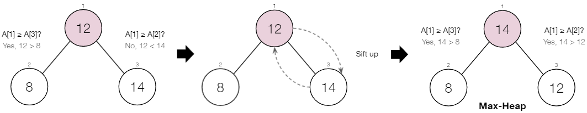 :::
-3ex -0.1ex -.4ex 0.5ex .2ex Constructing a Heap A heap can be stored as an array \(A\), where the:
-
Root of tree is \(A[1]\). The cell at index \(0\) is not used, thus we start at index \(1\).
-
Parent of \(A[i]\) is \(A[\lfloor i/2 \rfloor]\).
-
Left child of \(A[i]\) is \(A[2i]\).
-
Right child of \(A[i]\) is \(A[2i + 1]\).
To construct a heap:
-
Start with a single node.
-
Add a node to the right of the rightmost node in the deepest level. If the deepest level is full, start a new level.
-
Each time we add a node, we may destroy heap property of its parent node. To fix this, sift up until either:
-
We reach nodes whose values don't need to be swappedthe parent node is larger than both children.
-
We reach the root.
-
Suppose we have an array \(A = [8, 10, 5, 12, 14]\), we would construct the heap as such:
::: center 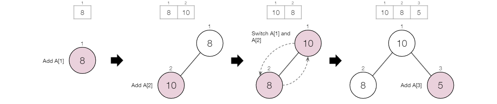 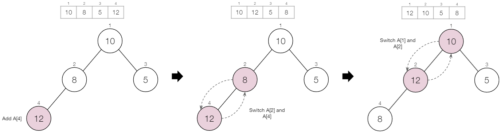 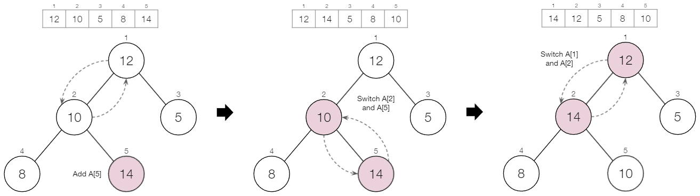 :::
Our final heap should look like this:
::: center 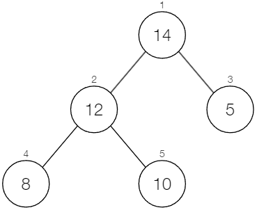 :::
-3ex -0.1ex -.4ex 0.5ex .2ex Maintaining Heap Property To implement this:
-
Represent an arbitrary array as a binary tree.
-
Devise a [
Max-Heapify()]{style="background-color: light-gray"} algorithm that maintains the heap property of any given node \(i\) in the heap with sub-trees \(l\) and \(r\) rooted at \(i\)th children, given to be heaps. -
Devise a [
Build-Max-Heap()]{style="background-color: light-gray"} algorithm that uses [Max-Heapify()]{style="background-color: light-gray"} algorithm to construct a heap.
::: algorithm [Max-Heapify]{.smallcaps} \((A,n)\)
::: algorithmic ::: :::
::: algorithm [Build-Max-Heap]{.smallcaps} \((A)\)
::: algorithmic ::: :::
The worst-case time complexity of:
-
[Max-Heapify]{.smallcaps} is \(\text{O}(\log{n})\)
-
[Build-Max-Heap]{.smallcaps} is \(\text{O}(n)\)
The heapsort algorithm is based on the heap data structure, which uses these two main parts: building a max-heap and sorting it, to sort
::: algorithm [Heapsort]{.smallcaps} \((A)\)
::: algorithmic ::: :::
Thus, heapsort has a worst-case time complexity of \(\text{O}(n\log{n})\) like merge sort, but heapsort has a space complexity of \(\text{O}(1)\), since it sorts in-place, taking a constant amount of memory.
-3ex -0.1ex -.4ex 0.5ex .2ex Priority Queue One of the most popular implementations of a heap, a priority queue is a data structure for maintaining a set \(S\) of elements, each with an associated value called a key. As with heaps, there are two kinds of priority queues: max-priority queue and min-priority queue.
::: center 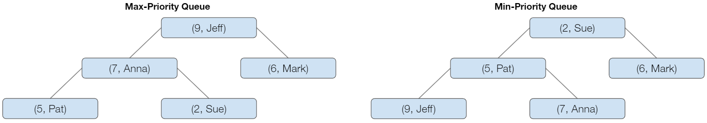 :::
We will focus here on how to implement max-priority queues, which are in turn based on max-heaps. A max-priority queue supports dynamic-set operations:
-
[
Insert(S,x)]{style="background-color: light-gray"} - Inserts element [x]{style="background-color: light-gray"} into set [S]{style="background-color: light-gray"}. -
[
Maximum(S)]{style="background-color: light-gray"} - Returns an element of [S]{style="background-color: light-gray"} with largest key. -
[
Extract-Max(S)]{style="background-color: light-gray"} - Removes and returns element of [S]{style="background-color: light-gray"} with largest key. -
[
Increase-Key(S,x,k)]{style="background-color: light-gray"} - Increases value of element [x]{style="background-color: light-gray"}'s key to [k]{style="background-color: light-gray"}. Assume [k \geq x]{style="background-color: light-gray"}'s current key value.
The procedure [Heap-Maximum]{.smallcaps} has a running time of \(\Theta(1)\).
::: algorithm [Heap-Maximum]{.smallcaps} \((A)\)
::: algorithmic ::: :::
The procedure [Heap-Extract-Max]{.smallcaps} has a running time of \(\text{O}(\log{n})\).
::: algorithm [Heap-Extract-Max]{.smallcaps} \((A)\)
::: algorithmic ::: :::
The procedure [Heap-Increase-Key]{.smallcaps} has a running time of \(\text{O}(\log{n})\).
::: algorithm [Heap-Increase-Key]{.smallcaps} \((A,i,key)\)
::: algorithmic ::: :::
The procedure [Max-Heap-Insert]{.smallcaps} has a running time of \(\text{O}(\log{n})\).
::: algorithm [Max-Heap-Insert]{.smallcaps} \((A,key)\)
::: algorithmic ::: :::
In summary, a heap can support any priority-queue operation on a set of size \(n\) in \(\text{O}(\log{n})\) time.
Hash Tables¶
-4ex -1ex -.4ex 1ex .2ex Introduction Many applications require a dynamic set that supports only the dictionary operations.
::: dBox ::: definitionT Definition 6.1 (Dictionary). A data structure that stores (key, value) pairs and supports the operations [Insert]{.smallcaps}, [Search]{.smallcaps}, and [Delete]{.smallcaps}. ::: :::
So far we have seen a couple ways to implement dictionaries, such as linked lists. Now we will learn how to use a hash tables.
-3ex -0.1ex -.4ex 0.5ex .2ex How It Works? A hash tables takes a key (typically a string of characters or numbers) and passes it through a hash function to convert it into an index of the array to store the associated value.
::: center 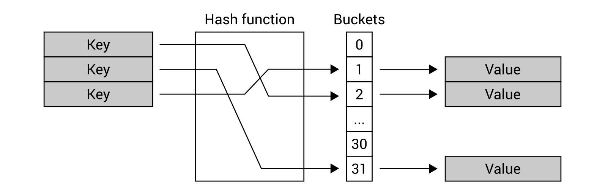 :::
Suppose you need to find a value of the key, you do not need to iterate through all items in the collection, because you can just use the hash function to easily find the index.
-
Using a hash table offers a very fast lookup for a value based on the key, which should be the \(\text{O}(1)\) operation.
-
It is a generalization of an ordinary array.
-3ex -0.1ex -.4ex 0.5ex .2ex Sample Problem As an example, you can think of a phone book. In the phone book, a person's name can be considered as a key, by which we can find a phone number.
- Case One:
-
The simple and straightforward way to lookup number is to check all names in the phone book until we find a matching name. The worst-case search time is \(\text{O}(n)\).
- Case Two:
-
Use a hash function that helps us to lookup entries much faster.
Suppose we have a person's name \"James Davis\" with the phone number \"416-999-1234\". A hash function takes the key and maps it to an integer that is within the size of the array: \(\(\text{String}\ \Rightarrow\ \boxed{\text{Hash Function}}\ \Rightarrow\ \text{Index}\)\) Then it stores the value of the phone number to an index of the array. If we continue to add more people, it would map each one to an index of the array.
::: center
 :::
:::
If we wanna lookup a person's phone number, all we need is the person's name and we can easily find the index it is stored in the array, by passing it through a hash function.
Obviously, this is a watered-down explanation and doesn't go in-depthlike the possibility when two or more keys hash to the same slot. But before moving further, let's understand how direct-address table works to see the benefits of using hash tables instead.
-3ex -0.1ex -.4ex 0.5ex .2ex Direct Address Table With an ordinary array, we store element whose key is \(k\) in position \(k\) of the array.
::: center
 :::
:::
::: dBox ::: definitionT Definition 6.2 (Direct addressing). Given a key \(k\), we find the element whose key is \(k\) by just looking in the \(k\)th position of the array. ::: :::
A direct-address table (DAT) uses the keys as indices of the array and stores the values at those bucket locations.
::: center
 :::
:::
It does facilitate fast searching, fast inserting and fast deletion operations:
-
Inserting or deleting an element in the table, is the same as you would do for an array, hence we can do that in \(\text{O}(1)\) time as we already know the index (via key).
-
Searching an element takes \(\text{O}(1)\) times, as we can easily access an element in an array in linear time if we already know the index of that element.
Direct addressing is applicable when we can afford to allocate an array with one position for every possible key, and so it comes at a cost:
-
It cannot handle collisionstwo keys are equal and contain different values.
-
It is not recommended using the direct address table if the key values are very large.
It has serious disadvantages, making it not suitable for the practical usage of current world scenarios, which is why we make use of hash tables.
-3ex -0.1ex -.4ex 0.5ex .2ex Hash Table As a recap, from the introduction, instead of storing an element with key \(k\) in index \(k\), we use a hash function \(h\) and store the element in index \(h(k)\).
::: center 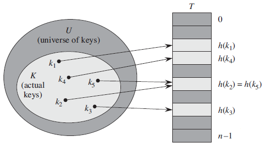 :::
::: dBox ::: definitionT Definition 6.3 (Hash function). A hash function \(h\) maps all possible keys to the slots of an array \(T[0 \dots n - 1]\). ::: :::
While hash table offer the same time complexity of \(\text{O}(1)\) when we talk about insertion, deletion, or searching an element, the main focus is in its ability to maintains the size constraint.
The problem with DAT is if the universe \(U\) of keys is large, storing a table of size of \(|U|\) may be impractical or impossible. Often, the set of keys \(K\) actually stored is small, compared to \(U\).
::: problem Problem 6.1. Suppose we have a key of \(7898\), which in turn is a large number. :::
- Case One:
-
Using a DAT table, we would need a huge array, for the key in index \(7898\) to store the value at \(T[7898]\). In turn, we are wasting too much space, as most of the allocated space for the array is wasted.
- Case Two:
-
But, in the case of a hash table, we can process this key via a hash function. The hash function \(h(7898)\) maps it to an index within the hash table \(T[0 \dots n - 1]\).
Regarding the size of the hash table \(n\) it typically varies, as it depends in part on choice of the hash function and collision resolution, where a situation might arise when two or more keys hash to the same slot.
-4ex -1ex -.4ex 1ex .2ex Hash Function A good hash function should minimizes collision as mush as possible. It is usually specified as the composition of two functions \(h(k) = h_2\big(h_1(k)\big)\):
- Hash code.
-
\(h_1: \text{keys}\ \to\ \text{integers}\)
- Compression function.
-
\(h_2: \text{integers}\ \to\ [0 \dots n - 1]\)
::: center 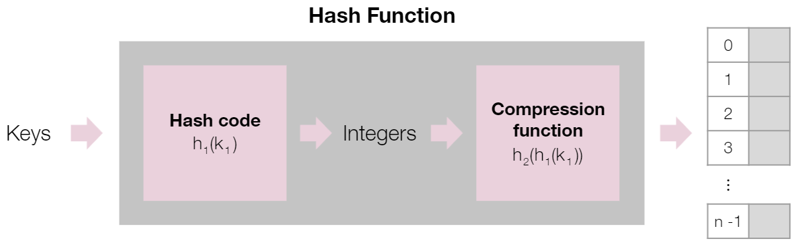 :::
The goal of the hash function is to disperse the keys in an apparently random way.
-3ex -0.1ex -.4ex 0.5ex .2ex Hash Code As mentioned previously, keys can be a string of characters. Thus, if the keys are not natural numbers, we find a way to interpret them as natural numbers. Some popular hash code maps are:
- Summing hash code.
-
By adding up the [ASCII values]{.underline} of each letters in a string, we get an integer in return. For example, if the key is \"stop\": \(\(h_1("stop") = 115 + 116 + 111 + 112\)\) However, this is not suitable for strings cause two different strings can have the same set of letters, but have different meaning\"post\", \"tops\", and \"pots\" will have the same hash code.
- Polynomial hash code.
-
A better hash code takes into account the position of each character. Using the example from before: \(\(h_1("stop") = (115 \times a^0) + (116 \times a^1) + (111 \times a^2) + (112 \times a^3)\)\) where \(a\) is a non-zero constantcompared to \"post\", \"tops\", and \"pots\", all have unique hash codes, which is ideal.
-3ex -0.1ex -.4ex 0.5ex .2ex Compression Function The hash code typically returns a large range of integers and so the compression functions maps it in the range \([0 \dots n - 1]\), the indices of the hash table. There's two methods:
- Division Method.
-
A simple-modulo based compression rule: \(\(h_2(k) = k\ \text{mod}\ n\)\) The size \(n\) of the hash table is usually chosen to be a prime number, to help spread out the distribution of hash values.
- MAD Method.
-
The Multiply-Add-Divide method still use \(\text{mod}\ n\) to get the numbers in the range, but a little fancier by spreading the numbers out first: \(\(h_2(k) = [(ak + b)\ \text{mod}\ p]\ \text{mod}\ n\)\) The values \(a\) and \(b\) are chosen at random as positive integers and \(p\) is a prime number, where \(p > n\). With the addition of \((ak + b)\ \text{mod}\ p\), it eliminates patterns provided by \(k\ \text{mod}\ n\).
Both incorporate the modulo operator, as it guarantees the output to be within the size of the hash table. Suppose we have a key of \(7898\) from the previous example and a hash table with \(23\) slots: \(\(h_2(7898) = 7898\ \text{mod}\ 23 = 9\)\) Then the key will be mapped to index \(9\) of the hash table.
-4ex -1ex -.4ex 1ex .2ex Collision Handling Collision occurs when different elements are mapped to the same index of the arraywhen \(h(k_1) = h(k_2)\), but \(k_1 \neq k_2\).
::: center :::
Avoiding collision is ideal, nonetheless, it is impossible, so we use closed or open addressing to overcome this problem. Each of them have their pros and cons.
-3ex -0.1ex -.4ex 0.5ex .2ex Closed Addressing Closed addressing (or open hashing) is also known as separate chaining.
When collision occurs, the index keeps a reference to a linked list or dynamic array that stores all items with the same index. Let \(e_1\) and \(e_2\) represent the values attached to \(k_1\) and \(k_2\) respectively.
::: center :::
Separate chaining is fairly simple to implement and faster than open addressing in general. However, it is memory inefficient as it requires a secondary data structure and longs chains can result in \(\text{O}(n)\) times.
-3ex -0.1ex -.4ex 0.5ex .2ex Open Addressing Instead of referencing to a list or an array, open addressing (or closed hashing) resolves collision by searching for another empty bucket.
::: center :::
There's three types of open addressing:
- Linear Probing.
-
When collision occurs, we linearly probe for the next bucket by increasing the index linearly until it finds an empty bucket: \(\(\text{Index} = \big[h(k) + i\big]\ \text{mod}\ n\)\) where \(i\) increases by one each iteration, until it finds an empty bucket.
- Quadratic Probing.
-
Similar to the previous one, but instead we increase the index quadratically until it finds an empty bucket: \(\(\text{Index} = \big[h(k) + i^2\big]\ \text{mod}\ n\)\) where \(i\) increases by one each iteration, until it finds an empty bucket.
- Double Hashing.
-
Using a secondary hash function \(h'(k)\), it places the colliding item in the first available cell by: \(\(\text{Index} = \big[h(k) + jh'(k)\big]\ \text{mod}\ n\)\) where \(j\) increases by one each iteration, until it finds an empty bucket. The secondary hash function cannot have zero values and is typically written as such: \(\(h'(k) = q -(k\ \text{mod}\ q)\)\) where \(q\) is a prime number, such that \(q > n\).
Unlike separate chaining, open addressing is more memory efficient, as it stores element in empty indices. However, it can create cluster:
-
Linear probing can result in primary clustering.
-
Quadratic probing can result in secondary clustering.
Compared to the two, double hashing distributes the keys more evenly and produces a uniform distribution of records throughout the hash table.
Trees¶
-4ex -1ex -.4ex 1ex .2ex Introduction A tree is a dynamic set of nodes storing elements in a parent-child relationship (edge) with the following properties:
-
It has a special node called root.
-
Each node different from the root has a parent node.
-
There is a single unique path along the edges from the root to any particular nodedoesn't have any cycles.
::: center :::
-3ex -0.1ex -.4ex 0.5ex .2ex Tree Terminology In a tree, we often refer to certain parts of tree, which are listed below. For reference:
::: center :::
-
Root: The top element with no parent (\(A\)).
-
Siblings: Children of the same parent (\(G, H\) both have the parent \(C\)).
-
External node: Also referred to as leave, ndoes with no children (\(E, I, J, K, G, H\)).
-
Internal node: nodes with one or more children (\(A, B, C, F\)).
-
Ancestors: A node that is connected to all lower-level node (\(A, B, F\) are ancestors of \(I, J, K\)).
-
Descendants: The connected lower-level nodes (\(I\) is a descendant of \(A, B, F\)).
-
Depth of a node: Number of ancestors (\(I\) has a depth of \(3\)).
-
Height of a tree: The max node depth (The height of tree is \(3\)).
-
Sub-tree: A tree consisting of a node and all its descendants (Refer to the red triangle above).
-3ex -0.1ex -.4ex 0.5ex .2ex Tree Traversals A traversal is defined as a systematic way of accessing or visiting all nodes of a tree. Let's use the following tree as an example:
::: center :::
There's three ways a tree can be traverse, but we'll only go over two of them. The last one will be covered in the next section.
- Preorder traversal.
-
Root is visited first and then sub-trees rooted at its children are visited recursively (\(A \to B \to D \to E \to C \to F \to G\)).
- Postorder traversal.
-
Recursively traverse the sub-trees rooted at children and then visit the root itself (\(D \to E \to F \to G \to B \to C \to A\)).
-4ex -1ex -.4ex 1ex .2ex Binary Search Tree Search trees are designed to support efficient search operations, including [Search]{.smallcaps}, [Minimum]{.smallcaps}, [Maximum]{.smallcaps}, [Predecessor]{.smallcaps}, [Successor]{.smallcaps}, [Insert]{.smallcaps}, and [Delete]{.smallcaps}.
A binary tree is a tree with the following:
-
Each internal node has at most two children.
-
The children of a node are an ordered pairleft child, right child and left sub-tree, right sub-tree.
-
The keys satisfy the binary-search tree property: \(u.key \leq v.key \leq w.key\)
-
Node \(u\) is a node (any node) in the left sub-tree of node \(v\).
-
Node \(w\) is a node (any node) in the right sub-tree of node \(v\).
-
::: center
 :::
:::
In other words, the value of the key of the parent should be between the value of the key of the left child and right child.
A binary search tree (BST) is organized, as the name suggests, in a
binary tree, where [root[T]]{style="background-color: light-gray"}
points to the root of tree [T]{style="background-color: light-gray"}
and each node contains the fields:
-
[
key]{style="background-color: light-gray"} (and possibly other satellite data) -
[
left]{style="background-color: light-gray"} which points to left child. -
[
right]{style="background-color: light-gray"} which points to right child. -
[
p]{style="background-color: light-gray"} which points to parent, where [p[root[T]] = nil]{style="background-color: light-gray"}
-3ex -0.1ex -.4ex 0.5ex .2ex Inorder Traversal The binary-search tree property allows us to print out all the keys in sorted tree by a simple recursive algorithm, called an inorder tree walk, which can be visualized as such:
::: center :::
\(\(D \to B \to E \to A \to F \to C \to G\)\) How [Inorder-Tree-Walk]{.smallcaps} works:
-
Check to make sure that [
x]{style="background-color: light-gray"} is not [nil]{style="background-color: light-gray"}. -
Recursively, print the keys of the nodes in the [
x]{style="background-color: light-gray"}'s left sub-tree. -
Print [
x]{style="background-color: light-gray"}'s key. -
Recursively, print the keys of the nodes in the [
x]{style="background-color: light-gray"}'s right sub-tree.
::: algorithm [Inorder-Tree-Walk]{.smallcaps} \((x)\)
::: algorithmic ::: :::
-3ex -0.1ex -.4ex 0.5ex .2ex Querying Binary search tree can support such queries as [Search]{.smallcaps}, [Minimum]{.smallcaps}, [Maximum]{.smallcaps}, [Predecessor]{.smallcaps}, and [Successor]{.smallcaps} operations.
The [Tree-Search]{.smallcaps} procedure starts at the root and traces a simple path downward in the tree. The running time is \(\text{O}(h)\), where \(h\) is the height of the tree.
::: algorithm [Tree-Search]{.smallcaps} \((x,k)\)
::: algorithmic ::: :::
The [Iterative-Tree-Search]{.smallcaps} is more efficient in which works by \"unrolling\" the recursion into a while loop.
::: algorithm [Tree-Search]{.smallcaps} \((x,k)\)
::: algorithmic ::: :::
Refer to the diagram below:
::: center :::
The binary search-tree property guarantees that:
-
the leftmost node is the minimum key of the binary search tree
-
the rightmost node is the maximum key of the binary search tree
Thus, the [Tree-Minimum]{.smallcaps} and [Tree-Maximum]{.smallcaps} procedure traverse the appropriate points until [nil]{.smallcaps} is reached. The running time for both is \(\text{O}(h)\).
::: algorithm [Tree-Minimum]{.smallcaps} \((x)\)
::: algorithmic ::: :::
::: algorithm [Tree-Maximum]{.smallcaps} \((x)\)
::: algorithmic ::: :::
Refer to the diagram below:
::: center :::
Before going over the procedure for successor and predecessor, let's define what it means. Assuming all keys are unique, if \(x\) has two children:
-
The successor is the minimum value in its right sub-tree.
-
The predecessor is the maximum value in its left sub-tree.
Refer to this example using the key value of \(25\):
::: center :::
If you recall from earlier, when we performed inorder traversal, we can find the successor and predecessor based entirely on the tree structure.
::: algorithm [Tree-Successor]{.smallcaps} \((x)\)
::: algorithmic ::: :::
We can break the code for [Tree-Successor]{.smallcaps} into two cases:
-
If [
x.right]{style="background-color: light-gray"} is non-empty, then [x]{style="background-color: light-gray"}'s successor is the minimum in [x]{style="background-color: light-gray"}'s right sub-tree. -
If [
x.right]{style="background-color: light-gray"} is empty, then go up the tree until the current node is a left child. If you cannot go up further and you reached root, then [x]{style="background-color: light-gray"} is the largest element.
For example, if we want to find the successor of the key value of \(20\):
-
The right sub-tree is empty, so we go up the tree to the key value of \(19\).
-
Since \(20\) is not a left child or located in the left sub-tree of \(19\), go up the tree to the key value of \(15\).
-
Likewise, it is not a left child of \(15\), so go up the tree to the key value of \(25\).
-
The key value of \(25\) has \(20\) as a left child, therefore, the successor of \(20\) is \(25\).
Refer to the diagram below:
::: center :::
The [Tree-Predecessor]{.smallcaps} procedure is symmetric to
[Tree-Predecessor]{.smallcaps} procedure, which instead uses
[x . left]{style="background-color: light-gray"}. The running time for
both is \(\text{O}(h)\).
-3ex -0.1ex -.4ex 0.5ex .2ex Insertion and Deletion The operations of insertion and deletion cause the dynamic set represented by a binary search tree to change. Thus, the binary-search tree property must hold after this change.
The [Tree-Insert]{.smallcaps} procedure works quite similar to [Tree-Search]{.smallcaps} and [Iterative-Tree-Search]{.smallcaps}, which begins at the root of the tree.
::: algorithm [Tree-Insert]{.smallcaps} \((T,z)\)
::: algorithmic ::: :::
In the code, we are trying to insert
[z]{style="background-color: light-gray"} to the tree
[T]{style="background-color: light-gray"}:
-
The pointer [
x]{style="background-color: light-gray"} traces a simple path downward looking for a [nil]{.smallcaps} to replace with the input [z]{style="background-color: light-gray"}. -
The trailing pointer [
y]{style="background-color: light-gray"} maintains the parent of [x]{style="background-color: light-gray"}.
Suppose we want to insert an item with key \(9\). The while loop in lines 3-8 can be expressed as:
::: center :::
The [nil]{.smallcaps} occupies the position where we wish to place the
input item [z]{style="background-color: light-gray"}. The lines 10-15
set the pointers that cause [z]{style="background-color: light-gray"}
to be inserted.
Deletion is somewhat more tricky than insertion. The process for
deleting node [z]{style="background-color: light-gray"} can be broken
into three cases:
- Case One:
-
If [
z]{style="background-color: light-gray"} has no children, then we simply remove it by modifying it's parent to replace [z]{style="background-color: light-gray"} with [nil]{.smallcaps}.
::: center :::
- Case Two:
-
If [
z]{style="background-color: light-gray"} has one child, then delete [z]{style="background-color: light-gray"} by making the parent of [z]{style="background-color: light-gray"} point to [z]{style="background-color: light-gray"}'s child, instead of [z]{style="background-color: light-gray"}.
::: center :::
- Case Three:
-
If [
z]{style="background-color: light-gray"} has two children, then delete [z]{style="background-color: light-gray"}'s successor, [y]{style="background-color: light-gray"}, from the tree (via Case One or Case Two) and replace [z]{style="background-color: light-gray"}'s key and satellite data with [y]{style="background-color: light-gray"}.
::: center :::
The [Tree-Delete]{.smallcaps} procedure executes the three cases as follows. The running time is \(\text{O}(h)\).
::: algorithm [Tree-Delete]{.smallcaps} \((T,z)\)
::: algorithmic ::: :::
As you may have notice, the running time for these operations: [Search]{.smallcaps}, [Minimum]{.smallcaps}, [Maximum]{.smallcaps}, [Predecessor]{.smallcaps}, [Successor]{.smallcaps}, [Insert]{.smallcaps}, and [Delete]{.smallcaps} all take \(\text{O}(h)\), where \(h\) is the height of the tree. These operations are fast if the height of the tree is small.
For binary search trees given we have \(n\) items, the minimum height of a binary tree can be \(\log{n}\) and the maximum be \(n\). It can be depicted as such:
::: center
 :::
:::
Ideally we want make sure the height of the binary tree is always \(\log{n}\), as it provides the worst-case running time of \(\text{O}(\log{n})\), thus comes the motivation for the next topic.
-3ex -0.1ex -.4ex 0.5ex .2ex Balanced Search Tree One way we can ensure our tree is always balanced is by implementing a self-balancing binary search tree. A search-tree data structure for which a height of \(\log{n}\) is guaranteed when implementing dynamic set of \(n\) items.
-
AVL Tree
-
Red-Black Tree
It ensures the \(\text{O}(\log{n})\) time complexity at all times, by maintaining the binary-search tree property and height-balance property of the tree, whenever insertion or deletion is performed.
-4ex -1ex -.4ex 1ex .2ex Red-Black Trees Red-black trees are one of many search-tree schemes that are "balanced" in order to guarantee that basic dynamic-set operations take \(\text{O}(\log{n})\) time in the worst case.
::: center :::
It is a binary tree that satisfies the following red-black properties:
-
Every node is either red or black.
-
The root and leaves ([nil]{.smallcaps}) are black.
-
If a node is red, then both of its children are black.
-
For each node, all simple paths from the node to ([nil]{.smallcaps}) descendant leaves contain the same number of black nodes.
To expand more on property 4, let's find the black-height of the key value of \(7\). These are all the simple paths that can be taken indicated by the grey dashed arrow above:
-
7, 3, [nil]{.smallcaps}
-
7, 18, 10, 8, [nil]{.smallcaps}
-
7, 18, 10, 11, [nil]{.smallcaps}
-
7, 18, 22, 26, [nil]{.smallcaps}
If we don't include the root node, notice how all simple paths consists of the (same number of) \(2\) black nodes. Likewise, the same can be said for every node in the tree.
The red-black tree is a BST, so we can implement the dynamic-set operations [Search]{.smallcaps}, [Minimum]{.smallcaps}, [Maximum]{.smallcaps}, [Predecessor]{.smallcaps}, and [Successor]{.smallcaps} in \(\text{O}(\log{n})\) time.
-3ex -0.1ex -.4ex 0.5ex .2ex Recoloring and Rotation However, it does not directly support the dynamic-set operations [Insert]{.smallcaps} and [Delete]{.smallcaps}. Because they modify the tree, the result may violate the red-black properties.
-
We must change color of some nodes via recoloring
-
Restructure the links of the tree via rotation
For starters, let's go over the relationship in a binary tree:
::: center :::
There's two types of procedures called [Left-Rotate]{.smallcaps} and [Right-Rotate]{.smallcaps}.
::: center
 :::
:::
The letters \(\alpha\), \(\beta\), and \(\gamma\) represent an arbitrary sub-treeall of them have the same black-height. First, determine if recoloring needs to be done.
- Case One:
-
If [
x]{style="background-color: light-gray"}'s uncle, [y]{style="background-color: light-gray"}, is red. Proceed with recoloring.
Push \(C\)'s black onto \(A\) and \(D\). Recurse and check for \(C\)'s uncle if it exists.
::: center :::
- Case Two:
-
If [
x]{style="background-color: light-gray"}'s uncle, [y]{style="background-color: light-gray"}, is black and there's a LR or RL imbalance.
::: center :::
There are four restructuring configurations depending on whether the double red nodes (\(A\) and \(B\)) are left or right children.
::: center :::
If there's a LR imbalance, perform [Left-Rotate]{.smallcaps} on middle node. Proceed to Case Three.
::: center
 :::
:::
If there's a RL imbalance, perform [Right-Rotate]{.smallcaps} on middle node. Proceed to Case Three.
::: center :::
- Case Three:
-
If [
x]{style="background-color: light-gray"}'s uncle, [y]{style="background-color: light-gray"}, is black and there's a LL or RR imbalance. Preserve the color
If there's a LL imbalance, perform [Right-Rotate]{.smallcaps} on top node.
::: center :::
If there's a RR imbalance, perform [Left-Rotate]{.smallcaps} on top node.
::: center
 :::
:::
-3ex -0.1ex -.4ex 0.5ex .2ex Insertion and Deletion To perform
insertion, we insert [x]{style="background-color: light-gray"} and
color it red. The motivation for using the color red is that only
property 2 and 3 might be brokenthese violation are fairly easy to fix.
The [RB-Insert]{.smallcaps} procedure performs the following three cases describe in the previous section. The running time is \(\text{O}(\log{n})\).
Suppose we want to insert \(15\) using the red-black tree shown in the beginning, then we would insert as we normally would in a BST and color it red. Refer to the diagram below:
::: center :::
Just like deleting a node in a BST, it's just as complicated to delete a node in a red-black tree. The process for deleting node can be broken into three cases:
- Case One:
-
If the deleted node is red, perform the deletion as you would in BST. No color changes should occur.
::: center :::
- Case Two:
-
If the deleted node is black and has one red child. Reattach the red child in place of the black node we removed, then recolor the red node as black to fix black-height of the tree.
::: center :::
- Case Three:
-
If the deleted node is black. Reattach a black child in place of the black node we removed, then recolor as a double black.
::: center
 :::
:::
The double black is to keep track of where we violated the black depth
property. Denoted as [r]{style="background-color: light-gray"} and the
sibling of [r]{style="background-color: light-gray"} as
[y]{style="background-color: light-gray"}, we'll divide this into
three sub-cases based on [y]{style="background-color: light-gray"}:
::: list
The color of [x]{style="background-color: light-gray"}, parent of
[z]{style="background-color: light-gray"}, displayed can be black or
red. These three sub-cases differ only on the color of
[y]{style="background-color: light-gray"}, sibling of
[r]{style="background-color: light-gray"}.
:::
- Case Three (a):
-
The sibling [
y]{style="background-color: light-gray"} of [r]{style="background-color: light-gray"} is black and has a red child [z]{style="background-color: light-gray"}.
::: center
 :::
:::
If [z]{style="background-color: light-gray"} is a left child, perform
[Right-Rotate]{.smallcaps} on
[y]{style="background-color: light-gray"}, then proceed below.
::: center
 :::
:::
If [
z]{style="background-color: light-gray"} is a right child, perform [Right-Rotate]{.smallcaps} on [x]{style="background-color: light-gray"}. We color [x]{style="background-color: light-gray"} and [z]{style="background-color: light-gray"} black, give [y]{style="background-color: light-gray"} the former color of [x]{style="background-color: light-gray"}, and color [r]{style="background-color: light-gray"} black.
::: center :::
As you can see, we managed to achieve the same configuration as the original tree prior to the deletion of node. We basically converted the red node to be a black node, thus maintaining the red-black tree property.
- Case Three (b):
-
The sibling [
y]{style="background-color: light-gray"} of [r]{style="background-color: light-gray"} is black and both children of [y]{style="background-color: light-gray"} are black.
::: center :::
If [x]{style="background-color: light-gray"} is red, we color it
black, then we color [r]{style="background-color: light-gray"} black
and [y]{style="background-color: light-gray"} red.
::: center :::
Otherwise, we only color [r]{style="background-color: light-gray"}
black and [y]{style="background-color: light-gray"} red.
::: center :::
In this case, we are essentially removing one black-height from the other sub-tree, to deal with the double black.
- Case Three (c):
-
The sibling [
y]{style="background-color: light-gray"} of [r]{style="background-color: light-gray"} is red. Perform an adjustment operation.
::: center :::
If [
y]{style="background-color: light-gray"} is the right child of [x]{style="background-color: light-gray"}, perform [Left-Rotate]{.smallcaps} on [x]{style="background-color: light-gray"}. We color [y]{style="background-color: light-gray"} black and [x]{style="background-color: light-gray"} red.
::: center :::
If [
y]{style="background-color: light-gray"} is the left child of [x]{style="background-color: light-gray"}, perform [Right-Rotate]{.smallcaps} on [x]{style="background-color: light-gray"}. We color [y]{style="background-color: light-gray"} black and [x]{style="background-color: light-gray"} red.
::: center :::
The sibling of [r]{style="background-color: light-gray"} should be
black now, thus solve using Case Three (a) or Case Three (b).
::: list
In Case Three (a) and Case Three (b), if
[r]{style="background-color: light-gray"} is in the right-side instead
of the left-side, the direction of rotation changese.g.
[Right-Rotate]{.smallcaps} instead of [Left-Rotate]{.smallcaps} and
vice-versa, as we have done in Case Three (c).
:::
-3ex -0.1ex -.4ex 0.5ex .2ex Comparing AVL and Red-Black Trees Since both provide dynamic-set operations in \(\text{O}(\log{n})\) time, which one to choose?
-
AVL trees provide faster lookups than Red Black Trees because they are more strictly balanced.
-
Red-Black Trees provide faster insertion and removal operations than AVL trees as fewer rotations are done due to relatively relaxed balancing.
-
AVL trees store balance factors or heights with each node, thus requires storage for an integer per node whereas Red Black Tree requires only 1 bit of information per node.
-
Red-Black Trees are used in most of the language libraries like map, multi-map, multi-set in C++ whereas AVL trees are used in databases where faster retrievals are required.
Graph¶
-4ex -1ex -.4ex 1ex .2ex Properties of a Graph A graph should consists of the following:
-
Vertices (nodes), which specify some entities we are interested in.
-
Edges (lines), which specify the relationship between entities.
-
Weights (number in lines), which specify the weight the edge represent.
The formal definition of a graph is a pair \((V,E)\) where:
-
\(V\) is a collection of nodes, called vertices.
-
\(E\) is a collection of pairs of vertices, called edges.
::: exampleT Example 8.1. We can represent the following graph using the given vertices and edges:
-
\(V = \{a,b,c,d,e,f\}\)
-
\(E = \{(a,c),(b,c),(c,f),(b,d),(d,f),(c,d)\}\)
::: center ::: :::
A graph can be categorized into one of two types, depending on the edge type:
- Undirected Graph.
-
Edges do not have a directionundirected edge are unordered pair of vertices, such that \((u,v)\) and \((v,u)\) are the same edge.
::: center :::
- Directed Graph.
-
Edges with directiondirected edges are ordered pair of vertices, such that \(\langle u,v \rangle\) and \(\langle v,u \rangle\) are two different edges.
::: center
 :::
:::
To distinguish between the two edge types, we use round brackets \(( )\) for unordered pairs and angle brackets \(\langle \rangle\) for ordered pairs.
-3ex -0.1ex -.4ex 0.5ex .2ex Graph Terminology We will go over a few graph terminologies, some of which you should be familiar with.
-
The degree of a vertex is the number of incident edges of this vertex. Below are some examples. Pay close attention to the degree of vertex \(z\).
::: center :::
Let \(m\) be the number of edges and \(\deg(a)\) be the degree of vertex \(a\), then \(\(\sum_{a \in V}\deg(a) = 2m\)\)
-
For undirected graphs, parallel edges are edges that have the same endpoints, whereas for directed graph, they are edges that have the same origin and destination.
::: center :::
-
Self-loop is an edge whose endpoints coincide, such as the edge \((z,z)\)
::: center :::
In this course, we will deal almost exclusively with simple graphs, which are graphs that do not have a parallel edge or self-loop. Let \(n\) be the number of vertices and \(m\) the number of edges, then \(\(m \leq \frac{n(n - 1)}{2}\)\)
There are various definitions used to describe the movement in a graph:
-
A path is a sequence of vertices, such that consecutive vertices are adjacent.
- A simple path is path such that all its vertices are distinct.
::: center :::
-
A cycle is a path on which the first vertex is equal to the last vertex.
- A simple cycle is a cycle such that all its vertices are distinct, except the first and last one.
::: center :::
Lastly, we'll cover the characteristics of a connected graph and the definition of a subgraph.
-
A connected graph is a graph in which there is a path from any vertex to any other vertex in the graph.
::: center :::
-
We can say a tree is a connected graph without a cycleany two vertices are connected by exactly one path.
::: center :::
-
A subgraph of a graph \((V,E)\) is a pair \((V', E')\) where \(V' \subseteq V\) and \(E' \subseteq E\). Both endpoints of edges in \(E'\) are in \(V'\).
::: center :::
-
Then a spanning tree is a subgraph of a connected graph, which includes all vertices of the connected graph.
::: center :::
-4ex -1ex -.4ex 1ex .2ex Representations of Graphs We can choose between two standard ways to represent a graph \(G = (V,E)\), as a collection of:
-
Adjacency list
-
Adjacency matrix
Either way applies to both directed and undirected graph. They are useful in representing dense and sparse graphs:
- Sparse graphs.
-
A graph with only a few edge.
- Dense graphs.
-
The number of edges is close to the maximal number of edges.
::: center :::
-3ex -0.1ex -.4ex 0.5ex .2ex Adjacency List The adjacency-list representation of a graph consists of an array \(\textit{Adj}\) of \(|V|\) list, one for each vertex in \(V\).
-
For an undirected graph, the adjacency list \(\textit{Adj}[u]\) contains all the vertices \(v\) such that there is an edge \((u,v), (v,u) \in E\).
::: center :::
Alternatively, you can think of it as a list of all the vertices adjacent to \(u\).
::: center :::
<!-- -->
::: center
{height="3cm"}
:::
Alternatively, you can think of it as a list of destinations given
the origin $u$.
::: center
{height="2.5cm"}
:::
::: list
Note that in an adjacency list, the order doesn't matter, meaning we could have listed the vertex in any order. :::
A useful thing we could do with adjacency list is to represent weighted graphsedges with an associated weight to them. It can easily be done by storing it with vertex \(v\) in \(u\)'s adjacency list.
::: center :::
A potential disadvantage of the adjacency-list representation is that there is no quicker way to determine if a given edge \((u,v)\) is present in the graph.
-
We would need to search for \(v\) in the adjacency list \(\textit{Adj}[u]\).
-
If we want to check the edge \((2,4)\), then we would need search through \(\textit{Adj}[2]\).
::: center :::
-
The worst-case running time would be the number of adjacent vertices, which is not ideal.
A solution would be to use an adjacency-matrix representation, which requires a constant time \(\text{O}(1)\), but at the cost of using asymptotically more memory.
-3ex -0.1ex -.4ex 0.5ex .2ex Adjacency Matrix The adjacency-matrix representation of a graph consists of a \(|V| \times |V|\) matrixassuming the vertices are numbered from \(1\), \(2\), ..., to \(|V|\).
We can represent the elements inside the matrix \(A\) as \(a_{ij}\), where \(i\) and \(j\) indicate the row and column.
-
For an undirected graph, if there is an edge \((i,j), (j,i) \in E\), then set \(a_{ij} = 1\), otherwise, \(a_{ij} = 0\).
::: center :::
Notice how \(a_{22}\) is \(0\), since the edge \((2,2)\) does not exist.
::: center :::
-
For a directed graph, if there is an edge \(\langle i, j \rangle \in E\), then set \(a_{ij} = 1\), otherwise, \(a_{ij} = 0\).
::: center :::
Like the adjacency-list representation of a graph, an adjacency matrix can represent a weighted graph. Instead of storing \(0\)'s and \(1\)'s, we store the weight of the given edge.
::: center :::
If an edge does not exist, we can store a [nil]{.smallcaps} value, depicted as empty in the diagram above.
-3ex -0.1ex -.4ex 0.5ex .2ex Comparison As we have demonstrated both are applicable to undirected and directed graphs, each with their own advantages and disadvantages.
**Adjacency List** **Adjacency Matrix**
**Space:** $\Theta(|V + E|)$ $\Theta(|V|^2)$
Time: List all vertices adjacent to \(u\) \(\Theta(\deg(u))\) \(\Theta(|V|)\) Time: Determine if \((u,v) \in E\) \(\Theta(\deg(u))\) \(\Theta(1)\)
The choice of which one to use comes down to the following criteria:
-
The adjacency-list representation provides a compact way to represent sparse graphsthose for which \(|E|\) is much less than \(|V|^2\).
-
However, if \(|E|\) is close to \(|V|^2\), then we may choose an adjacency-matrix representation since it almost have the same space complexity as the adjacency-list.
-
Alternatively, if we need to be able to tell quickly if there is an edge connecting two given vertices, an adjacency-matrix representation is used.
-4ex -1ex -.4ex 1ex .2ex Graph Traversals A traversal (or graph searching) is a systematic procedure for exploring a connected graph by examining all its vertices and/or edges. There's two types of traversal algorithms:
-
Breadth-First Search (BFS)
-
Depth-First Search (DFS)
-3ex -0.1ex -.4ex 0.5ex .2ex Breadth-First Search Breadth-first search (BFS) is one of the simplest algorithms for searching a graph, which uses a queue data structure.
For simplicity, we will use a tree to describe breadth-first search:
-
Let's start at the root of tree. Let's add \(A\) to the queue.
::: center :::
-
We want to explore all the vertices that are adjacent to \(A\), which are \(B\) and \(C\). We will add them to the queue.
::: center :::
Note that the order they are placed in queue does not matter. We could have stored \(C\) first.
-
Since we finished \"exploring\" \(A\), we will move on, then \(B\) is next in queue.
::: center
 :::
::: -
Likewise, we add all vertices adjacent to \(B\), which are \(D\) and \(E\), to the queue.
::: center
 :::
::: -
Since we finished \"exploring\" \(B\) , we will move to \(C\).
::: center :::
-
We will add the vertices adjacent to \(C\). which are \(F\) and \(G\) to the queue.
::: center
 :::
::: -
When we move to vertex \(D\), you will see there are no adjacent vertices, thus we don't add anything to the queue and move on to \(E\).
::: center :::
-
The same can be said for \(E\) through \(G\), in which we finish our breadth-first search.
::: center
 :::
:::
This is a simplified explanation, but should provide a general idea of how it works. We associate the vertex colors to guide the algorithm:
-
White vertices have not been discovered. All vertices start out white.
-
Grey vertices are discovered but not fully explored.
-
Black vertices are discovered and fully explored.
The algorithm attaches several attributes to each vertex, such as color
[u.color]{style="background-color: light-gray"}, parent
[u.\pi]{style="background-color: light-gray"}, and distance
[u.d]{style="background-color: light-gray"} which is computed by the
algorithm.
-
To keep track of progress, breadth-first search colors each vertex white, grey, or black.
-
Distance is used to represent the smallest number of edges that must be traverse from the starting vertex [
s]{style="background-color: light-gray"} to end vertex [v]{style="background-color: light-gray"}.
::: algorithm [BFS]{.smallcaps} \((G,s)\)
::: algorithmic ::: :::
We start off by painting every vertex
[white]{style="background-color: light-gray"} except our starting
vertex [s]{style="background-color: light-gray"} and setting the
distance to [\infty]{style="background-color: light-gray"}, as we not
sure how far it is from the starting vertex or whether it is even
reachable.
::: algorithm ::: algorithmic ::: :::
Then we paint our starting vertex
[s]{style="background-color: light-gray"} to
[grey]{style="background-color: light-gray"}, set the distance to
[0]{style="background-color: light-gray"}, since it's our starting
point. The parent of [s]{style="background-color: light-gray"} is
[nil]{style="background-color: light-gray"}doesn't exist.
::: center :::
Note that vertex [s]{style="background-color: light-gray"} is
something that we chose, which in this example is
[5]{style="background-color: light-gray"}.
::: algorithm ::: algorithmic ::: :::
Then we initialize [Q]{style="background-color: light-gray"} to the
queue containing just the vertex
[s]{style="background-color: light-gray"} which is
[5]{style="background-color: light-gray"}.
::: center
 :::
:::
::: algorithm ::: algorithmic ::: :::
The [while]{style="background-color: light-gray"} loop functions
similarly to what we have demonstrated in the first example.
::: center
 :::
:::
The total running time of the [BFS]{.smallcaps} procedure is
\(\text{O}(V + E)\). As you may have notice, it is
particularly useful for finding the shortest path from the starting
vertex [s]{style="background-color: light-gray"} to some vertex
[v]{style="background-color: light-gray"} in the graph.
-3ex -0.1ex -.4ex 0.5ex .2ex Depth-First Search Depth-first search (DFS) as the name implies, searches \"deeper\" first until it cannot go further at which point it backtracks and continues, which uses a stack data structure.
Let's use the same tree as we have used for BFS, to compare the difference:
-
As before, we will start at the root of three. Let's add \(A\) to the stack.
::: center :::
-
Then we arbitrarily pick an edge outwards of \(A\), which will choose \(B\) and add to the stack.
::: center :::
Note there's multiple ways, so we could have also chosen to go with vertex \(C\) instead.
-
Continue to pick an edge outwards, which there is only one, so will choose \(D\).
::: center :::
-
Since there's no more vertices to explore, we backtrack to vertex \(B\).
::: center :::
-
Continue to pick an edge outwards that has not been visited yet, which is vertex \(E\).
::: center :::
-
Then we backtrack all the way to vertex \(A\), since all of vertex \(B\) and \(E\) has been explored.
::: center :::
-
Then, we repeat the same steps for the right sub-tree, by picking some arbitrary edge outwards until we have fully discovered every vertex.
DFS uses the same color scheme as we previously described in BFS. However, one unique thing about the algorithm is the it uses two timestamps for:
-
when it first discovers the vertex [
u.d]{style="background-color: light-gray"} and ... -
when it finishes exploring the vertex [
u.f]{style="background-color: light-gray"}.
This is similar to BFS, which we paint every vertex
[white]{style="background-color: light-gray"}. The
[time]{style="background-color: light-gray"} is set to
[0]{style="background-color: light-gray"}, which will use to compute
the discovery time [u.d]{style="background-color: light-gray"} and
finishing time [u.f]{style="background-color: light-gray"}.
::: algorithm [DFS]{.smallcaps} \((G)\)
::: algorithmic ::: :::
For this example, we'll use a directed graph as it's \"easier\" to pick an edge outwards and demonstrate.
::: center :::
For demonstration purposes, the discovery time and finishing time is denoted below the vertex, shown on the right.
::: algorithm [DFS-Visit]{.smallcaps} \((G,u)\)
::: algorithmic ::: :::
We'll choose vertex [8]{style="background-color: light-gray"} as our
starting vertex. It'll recursively call
[DFS-Visit]{style="background-color: light-gray"} until it reaches a
dead end then it colors the vertex black.
::: center :::
Once the recursion finishes, it goes to the next
[v]{style="background-color: light-gray"} that is in
[Adj[u]]{style="background-color: light-gray"} and repeats the same
thing.
::: center :::
Since there's no more [v]{style="background-color: light-gray"} (or
vertex to explore) in [Adj[u]]{style="background-color: light-gray"}.
We pick a new [u]{style="background-color: light-gray"}.
::: center
 :::
:::
The total running time of the [DFS]{.smallcaps} procedure is \(\text{O}(V + E)\), similar to [BFS]{.smallcaps} procedure. It provides valuable information about the structure of a graph and is more suitable for decision treelike a maze.
We can use depth-first search to perform a topological sort of a directed acyclic graph (dag)a directed graph with no cycles.
::: center :::
By performing topological sort, we can find the topological orderingordering of its vertices along a horizontal line so that all directed edges go from left to right.
::: center
 :::
:::
Note how the order they are listed in regarding their finishing times. The [Topological-Sort]{.smallcaps} sorts a dag by:
::: algorithm [Topological-Sort]{.smallcaps} \((G)\)
::: algorithmic ::: :::
We can perform [Topological-Sort]{.smallcaps} in \(\text{O}(V + E)\) time, since DFS takes \(\text{O}(V + E)\).
Elementary Graph Algorithms¶
Minimum Spanning Tree¶
The minimum spanning tree is the spanning tree of a weighted graph with minimum total edge weight. What this means, is suppose we have a connected graph with weighted edges.
::: center :::
We are interested in the subset of the edges which connects all vertices together, while minimizing the total edge cost. We can form three variations of the graph's spanning tree:
::: center :::
As you can see, tree 1 in particular is our minimum spanning tree because it posses the minimum total edge weight of \(71\). Obviously when there's more vertices and edges, it will be much harder to figure out the MST. And so we'll go over two types of algorithms which does the following:
- Kruskal's algorithm
- Prim's algorithm
For both algorithm, we will try and find the minimum spanning tree of the following completed graph below and compare them after.
::: center :::
Kruskal's Algorithm¶
This algorithm creates a forest of trees. It works by picking the smallest edge then checking if it forms a cycle with the spanning tree formed so far. If not, the edge is added, otherwise, discard it.
-
We start off by selecting the smallest edge in the graph, which is \((6,1)\), as it has an edge weight of \(10\).
::: center
 :::
::: -
Then, we select the next smallest edge, which is \((4,3)\), with an edge weight of \(12\).
::: center :::
-
The next minimum edge is \((7,2)\), with an edge weight of \(14\).
::: center :::
-
The next minimum edge is \((2,3)\), with an edge weight of \(16\).
::: center :::
-
The next minimum edge is \((7,4)\), with an edge weight of \(18\). However, notice that it forms a cycle, so we discard it.
::: center :::
Instead, we go to the next minimum edge, \((5,4)\), with an edge weight of \(22\).
::: center
 :::
::: -
The next minimum edge is \((5,6)\), with an edge weight of \(25\).
::: center :::
-
Once we have all our vertices or have \(|V| - 1\) edges, we are done with the algorithm. Our MST is complete, which has the weight of \(99\).
Prim's Algorithm¶
This algorithm starts with one node. It then adds a node one by one that is unconnected to the new graph. For this example, let's start at vertex \(6\).
-
Since we started with \(6\), we have to select the smallest edge that is connected to \(6\), which are either: \(25\) or \(10\).
::: center :::
We'll select the edge weight of \(10\), since that's the smallest.
-
Likewise, we now have to select the smallest edge that is connected to either \(6\) or \(1\), which will pick edge \((6,5)\), with an edge weight of \(25\).
::: center :::
-
We are basically repeating the same step, but now with more and more edges to pick from. The dashed lines indicate the possible edges to select.
::: center :::
While it was not demonstrated in this example, but if an edge is selected and it forms a cycle, we will discard it and choose the next minimum edge, similar to Kruskal's algorithm.
-
Once we have all our vertices or have \(|V| - 1\) edges, we are done with the algorithm, which also have a weight of \(99\).
As you can see, we have obtained the same MST for both Kruskal and Prim's algorithm, so which one to choose?
- Kruskal's algorithm runs faster in sparse graph, with the time complexity of \(\text{O}(E\log{V})\).
- Prim's algorithm runs faster in dense graph, with the time complexity of \(\text{O}(E\log{V})\), but it can be improved up to \(\text{O}(E + V\log{V})\) using Fibonacci heaps.
Shortest Path¶
We define the shortest path as the minimum length path from a vertex to another vertex in \(G\), if such a path exists. Previously, we have done something similar with breadth-first search with an unweighted graph, in which each edge has a weight of \(1\).
::: center :::
We are particularly interested in the single-source shortest path's problem, that is given a graph \(G = (V,E)\), what is the shortest path from a given source vertex \(s \in V\) to each vertex \(v \in V\).
::: center
 :::
:::
Suppose we chose \(A\) as our source vertex, then the shortest-paths tree are:
::: center
 :::
:::
If you calculate the weight from the source vertex \(A\) to every other vertex, you will get the minimum edge weight possible.
- From \(A\) to \(B\), the total edge weight is \(3\).
- From \(A\) to \(C\), the total edge weight is \(5\).
- From \(A\) to \(D\), the total edge weight is \(9\).
- From \(A\) to \(E\), the total edge weight is \(11\).
You also may have notice that the shortest-paths tree are not unique, meaning there can also be more than one shortest-path tree, nonetheless should still provide the same answers. In this section, we'll go over two algorithms which does the following:
- Dijkstra's algorithm
- Bellman-Ford's algorithm
As will demonstrate, each algorithm have their advantages and disadvantages when choosing one over the other. Both algorithm uses the [Relax]{.smallcaps} procedure, but implement them in varying ways.
::: algorithm [Relax]{.smallcaps} \((u,v,w)\)
::: algorithmic ::: :::
The process of \"relaxing\" an edge is to check if its worth going through the edge \(\langle u,v \rangle\) which would improve the shortest path from source vertex to some vertex [v]{style="background-color: light-gray"}.
- Dijkstra's Algorithm relax each edge exactly once.
- Bellman-Ford's Algorithm relaxes each edge \(|V| - 1\) times.
For example, assume we have the obtained the following weighted, directed graph and we wanna find the shortest path to vertex \(D\). Suppose we start by relaxing the edge \(\langle C,D \rangle\).
::: center :::
Every vertex initially start with a distance of \(\infty\) and since \(\infty > 7 + 6 = 13\), we used the edge \(\langle C,D \rangle\). But now let's relax the other edge, \(\langle B,D \rangle\).
::: center :::
Since \(13 > 6 + 4 = 10\), we now use the edge \(\langle B,D \rangle\) instead of \(\langle C,D \rangle\).
Dijkstra's Algorithm¶
As we shall see, Dijkstra's algorithm is pretty similar to Prim's algorithm, which we covered in Minimum Spanning Tree. One limitation of this algorithm is that all edge weights must be non-negative.
-
Let's pick \(A\) as our source vertex. There's a table in the right-side, which will use to keep track of distances from the source vertex to each vertex.
::: center :::
We put infinity for the other vertices as we haven't visited them yet. A change in the distance will be indicated by the grey boxes in each step.
-
Next, we examine the edges leaving \(A\). As denoted in the table, we can reach \(B\) and \(C\) with an edge weight of \(10\) and \(3\) respectively.
::: center
 :::
::: -
We always pick the smallest edge weight of which the vertex hasn't been discovered. In this case, it's \(\langle A,C \rangle\).
::: center :::
Notice how we don't include the edge \(\langle A,B \rangle\) in consideration as \(B\) is now reachable from \(\langle A,C \rangle\) and \(\langle C,B \rangle\) with a smaller total edge weight of \(7\).
-
Now \(D\) and \(E\) are now reachable. As usual, we'll pick the next smallest edge, which is \(\langle C, E \rangle\).
::: center
 :::
:::Similar to what was described before, we don't consider the edge \(\langle E, D \rangle\), since \(D\) has a shortest path using the edge \(\langle C, D \rangle\) instead of \(\langle E, D \rangle\).
-
Our only options left are \(\langle C,B \rangle\) and \(\langle C,D \rangle\). We pick \(\langle C, B \rangle\), as it has the smallest edge weight of \(7\).
::: center :::
From \(A\) to \(D\), the edge \(\langle C, D \rangle\) will results in a distance of \(11\), while \(\langle B,D \rangle\) will result in a distance of \(9\).
-
So all that's left is to pick the last remaining edge, which is \(\langle B, D \rangle\).
::: center :::
-
All the edges have been discovered, so we are done with the algorithm.
Bellman-Ford's Algorithm¶
Bellman-Ford's algorithm is more general than Dijkstra's algorithm, such that it can deal with negative edge weights. However, it is a bit more time consuming in comparison.
-
As usual, let start with vertex \(A\) as our source vertex and the distances to each vertex listed in the right.
::: center :::
-
With Bellman-Ford's algorithm, we want to relax all the edges. In other words, we should test out all the possible edges that will result in the shortest path.
-
So this will be our first iteration. Starting at \(A\), we can reach \(B\) and \(C\) with a weight of \(10\) and \(3\), using the edges, \(\langle A,B \rangle\) and \(\langle A,C \rangle\) respectively.
::: center
 :::
::: -
From \(B\), we can reach \(D\) at a total weight of \(12\) using the edge \(\langle B,D \rangle\). Note that we won't use the edge \(\langle B,C \rangle\), as it result in a longer path from \(A\) to \(C\).
::: center :::
-
From \(C\), we can reach \(E\) at a total weight of \(5\) using the edge \(\langle C,E \rangle\).
::: center :::
Also, notice if we use the edge \(\langle C,B \rangle\), we will get a shorter path to \(B\) with a total weight of \(7\). Consequently, it also lowers the total weight of \(D\) to \(9\).
::: center :::
Since we found a better path, we'll remove the edge \(\langle A,B \rangle\).
-
From \(D\), we only have one edge to work with, which is \(\langle D,E \rangle\), however, notice how this increases the total weight of \(E\) from \(5\) to \(16\), so, we don't use it.
::: center :::
-
Similarly for \(E\), we have the edge \(\langle E,D \rangle\), however, this also increase the weight of \(D\) by \(9\) to \(12\), so we don't use it.
::: center :::
Since we have checked all vertex. we're done with our first iteration.
-
The algorithm at most takes \(|V| - 1\) iterations to fully obtain the shortest-tree path. However, it can sometimes be less if there's no changes occurring after the next iteration.
-
In our second iteration, we proceed to the do the following, but using the graph we got from our first iteration.
::: center
 :::
:::Our only option is \(\langle A,B \rangle\), however, this doesn't improve the distances of \(B\), so we don't update the graph.
-
Same thing can be said for \(B\), \(C\), \(D\) and \(E\). So after our second iteration, we are finished.
Remark
In the actual exam, they might provide you the edges in which you should relax them by order. The process will still be the same as described from above, but the order may be different, as they might ask you to relax the edges of \(E\) before \(D\) or etc.
One useful property of Bellman-Ford algorithm is that we can also use it to check for the existence of negative cycleone in which the overall sum of the cycle becomes negative.
::: center :::
If you add the weights of its edges, it's negative (\(-6 + 3 + 2 = -1\)). The concept of a shortest path is meaningless if there is a negative cycle, as we'll have a continuous loop. Refer to the example below.
To demonstrate this, let's use the following weighted, directed graph and set \(A\) as the source vertex. As you can see, we will loop through the cycle \(B\), \(C\), and \(D\), such that total weight keeps decreasing.
::: center :::
As mentioned before, Bell-man Ford's algorithm runs for \(|V| - 1\) iterations and it guarantees that at the end, the distances are guaranteed to be correct or [v.d > u.d + w(u,v)]{style="background-color: light-gray"} is false.
::: center :::
However, as you can see that is not the case, such that [v.d > u.d + w(u,v)]{style="background-color: light-gray"} is still true, thus, it will detect a negative cycle.
As a summary, comparing the two algorithms we've covered in this section:
- The Dijkstra's algorithm is less time consuming, as it has a time complexity of \(\text{O}(E\log{V})\), compared to Bellman-Ford's algorithm which is \(\text{O}(VE)\).
- Bellman-Ford works when there is negative weight edge, it also detects the negative weight cycle. Dynamic programming approach is taken to implement the algorithm.
- While Dijkstra's algorithm doesn't work when there is a negative weight edge. Greedy approach is taken to implement the algorithm.